먼저 볼 결과
대표 9개, 수요 보강이 필요한 비교군 1개, 별도 보류 2개
Go공부·학습
오픽 모의고사 계획표
2주 또는 1달 계획을 고르면 모의고사 회차와 영상이 날짜 순서대로 생긴다.
- 수요
- 1회 모의고사 영상 조회 11,861·좋아요 56
- 소통
- 원문에서 Kakao 오픈채팅·Discord·YouTube·1:1 문의 경로를 함께 운영
Go가족·육아
초기 이유식 D+174~209 식단
PDF의 D+174~209 식단 36개가 순서대로 생기고, 매일 제공한 식단만 체크한다.
- 수요
- 댓글 9,999+ 표시
- 소통
- 파일과 비밀번호 요청 댓글에 제작자가 반복 응답
Go집·살림
이사 D-30 체크리스트
이사일 하나를 넣으면 D-30부터 도착지 정리까지 해야 할 일이 생긴다.
- 수요
- 원문 조회 98,401·스크랩 20
- 소통
- 비교 원문 댓글 26·공유 4,182
Go여행·외출·행사
결혼 준비 D-12개월 타임라인
결혼 예정일을 넣으면 원문의 6개 시기와 계약·예약 항목이 순서대로 생긴다.
- 수요
- 댓글 1,102개
- 소통
- Notion 링크 요청과 제작자 응답
Go건강·운동
Allblanc 7일 복근 챌린지
7개 영상을 Day 1부터 순서대로 열고 완료만 체크한다.
- 수요
- 7개 영상 합산 조회 약 539,000
- 소통
- 첫 영상 댓글 154개
Go집·살림
신박한 수납 팁 5
수납 팁 5개 중 필요한 하나만 골라 독립 프로젝트로 저장한다.
- 수요
- 조회 684,233·좋아요 12,986·스크랩 53,119
- 소통
- 댓글 398
Go식사·장보기
평일 5일 도시락 식단
월요일부터 금요일까지 도시락 메뉴와 확인된 레시피가 한 주에 배치된다.
- 수요
- 조회 10,943·좋아요 226·스크랩 451
- 소통
- 댓글 27
Go돈·행정·구매
리모델링 계약서 체크 10
계약서 작성 전에 놓치기 쉬운 10개 조항을 한 번에 확인한다.
- 수요
- 조회 253,495·좋아요 2,427·스크랩 8,029·공유 13,704
- 소통
- 댓글 124
Go공부·학습
OSSU Computer Science 시작 구간
OSSU 전체를 한꺼번에 넣지 않고 Intro CS와 Core programming 6개 과정의 순서·기간·선수조건만 관리한다.
- 수요
- GitHub star 207k·fork 25.7k
- 소통
- 열린 issue 16·PR 7·Discord 커뮤니티
Modify돈·행정·구매
신차 구매 8단계
예산 결정부터 출고 후 관리까지 신차 구매의 8단계를 순서대로 확인한다.
- 수요
- 2026-01-01 업데이트
- 소통
- 견적 요청 CTA
HoldGold 경계
독서 기록과 목표
댓글 37개와 제작자의 실제 루틴은 있으나, 모든 사용자가 그대로 따를 공통 일정은 아니다.
HoldGold 경계
영유아 예방접종 일정
공식 일정 신뢰도는 높지만 creator 커뮤니티 콘텐츠가 아니다. 최신 공식 사실을 보강하는 trust anchor 역할이 맞다.
선택한 조건에 맞는 후보가 없습니다.
대표 Flow 콘텐츠 전체
샘플이 아니라 앱 투입을 판단할 수 있는 전체 22 Flow · 63 Step · 184 Item
Go공부·학습
오픽 모의고사 계획표
2주 또는 1달 계획을 고르면 모의고사 회차와 영상이 날짜 순서대로 생긴다.
핵심 수요1회 모의고사 영상 조회 11,861·좋아요 56
소통 증거원문에서 Kakao 오픈채팅·Discord·YouTube·1:1 문의 경로를 함께 운영
전체 구조2 Flow · 7 Step · 42 Item
최초 입력필수 1개(계획 선택), 일정화할 때 시작일 1개
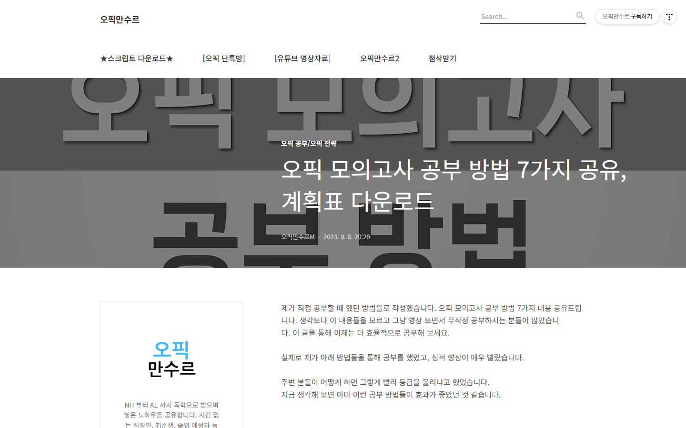
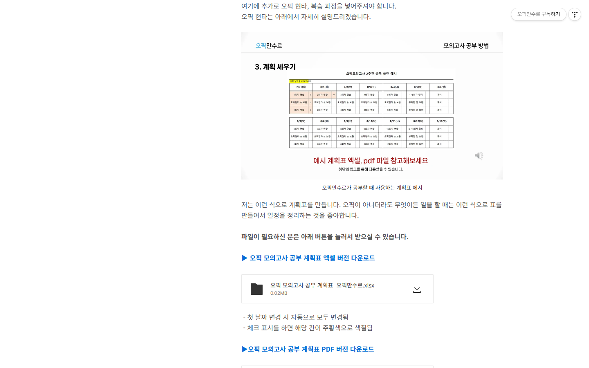
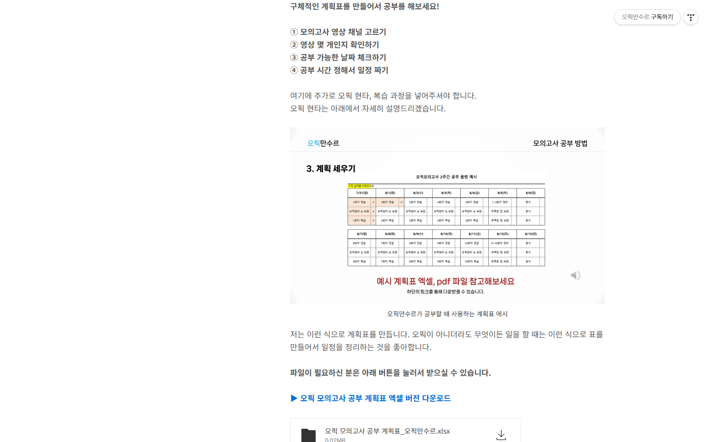
계획표와 영상 링크를 다시 맞추는 시간을 없앤다.
각 회차에서 원문·영상·첨삭·커뮤니티로 사용자를 돌려보낸다.
기간형 학습 저장, 체크, 캘린더 내보내기, 다음 회차 재방문이 생긴다.
카드 약속2주 12개 또는 1달 30개 학습 행동과 10개 영상
첫 화면첫 회차와 영상 링크를 먼저 표시
모바일주차를 접어 두고 현재 주차만 펼친다.
판정현재 Flow/Step/Item 구조에 적합
저장하면 가장 먼저 보이는 내용1주차 · 1~5회
- 1회 모의고사 실전처럼 풀기
- 2회 모의고사 실전처럼 풀기
- 3회 모의고사 실전처럼 풀기
외 3개 · 전체 내용은 아래에서 확인
실제 적용 데이터
Flow 콘텐츠 전체
Flow 1오픽 모의고사 2주 플랜2 Step · 12 Item
1주차 · 1~5회
61회 모의고사 실전처럼 풀기
영상: https://www.youtube.com/watch?v=MZmrXlAc6k4 · 범위: 15문항 모의고사 · 실제 시험처럼 답변을 녹음하고, 막힌 질문과 고칠 표현을 같은 메모에 적는다.
원문 근거 2개
- 1회 모의고사 실전·녹음·보완·복습2주 계획표 1주차 월요일
- 1회 모의고사 영상오픽 모의고사 1회 영상
2회 모의고사 실전처럼 풀기
영상: https://www.youtube.com/watch?v=YOZADzoC22s · 범위: 은행·바·카페·MP3·걷기 · 실제 시험처럼 답변을 녹음하고, 막힌 질문과 고칠 표현을 같은 메모에 적는다.
원문 근거 2개
- 2회 모의고사 실전·녹음·보완·복습2주 계획표 1주차 화요일
- 2회 모의고사 영상오픽 모의고사 2회 영상
3회 모의고사 실전처럼 풀기
영상: https://www.youtube.com/watch?v=bRjvaQ380MU · 범위: 15문항 모의고사 · 실제 시험처럼 답변을 녹음하고, 막힌 질문과 고칠 표현을 같은 메모에 적는다.
원문 근거 2개
- 3회 모의고사 실전·녹음·보완·복습2주 계획표 1주차 수요일
- 3회 모의고사 영상오픽 모의고사 3회 영상
4회 모의고사 실전처럼 풀기
영상: https://www.youtube.com/watch?v=N2s5golewUI · 범위: 15문항 모의고사 · 실제 시험처럼 답변을 녹음하고, 막힌 질문과 고칠 표현을 같은 메모에 적는다.
원문 근거 2개
- 4회 모의고사 실전·녹음·보완·복습2주 계획표 1주차 목요일
- 4회 모의고사 영상오픽 모의고사 4회 영상
5회 모의고사 실전처럼 풀기
영상: https://www.youtube.com/watch?v=uCUiUlggGlE · 범위: 15문항 모의고사 · 실제 시험처럼 답변을 녹음하고, 막힌 질문과 고칠 표현을 같은 메모에 적는다.
원문 근거 2개
- 5회 모의고사 실전·녹음·보완·복습2주 계획표 1주차 금요일
- 5회 모의고사 영상오픽 모의고사 5회 영상
1~5회 답변 총복습
이번 주 녹음을 다시 듣고 반복해서 막힌 질문과 다음 주에 쓸 핵심 표현을 한 메모로 정리한다.
원문 근거 6개
- 1~5회 총복습2주 계획표 1주차 토요일
- 1회 모의고사 영상오픽 모의고사 1회 영상
- 2회 모의고사 영상오픽 모의고사 2회 영상
- 3회 모의고사 영상오픽 모의고사 3회 영상
- 4회 모의고사 영상오픽 모의고사 4회 영상
- 5회 모의고사 영상오픽 모의고사 5회 영상
2주차 · 6~10회
66회 모의고사 실전처럼 풀기
영상: https://www.youtube.com/watch?v=KddRF_nM9uI · 범위: 동네·건강·국내여행·은행·가족 · 실제 시험처럼 답변을 녹음하고, 막힌 질문과 고칠 표현을 같은 메모에 적는다.
원문 근거 2개
- 6회 모의고사 실전·녹음·보완·복습2주 계획표 2주차 월요일
- 6회 모의고사 영상오픽 모의고사 6회 영상
7회 모의고사 실전처럼 풀기
영상: https://www.youtube.com/watch?v=cAOaiJsT7ac · 범위: 집에서 보내는 휴가·지리·공휴일·집·음악 · 실제 시험처럼 답변을 녹음하고, 막힌 질문과 고칠 표현을 같은 메모에 적는다.
원문 근거 2개
- 7회 모의고사 실전·녹음·보완·복습2주 계획표 2주차 화요일
- 7회 모의고사 영상오픽 모의고사 7회 영상
8회 모의고사 실전처럼 풀기
영상: https://www.youtube.com/watch?v=VFWF-HUYggI · 범위: 기술·캠핑·패션·쇼핑·건강 · 실제 시험처럼 답변을 녹음하고, 막힌 질문과 고칠 표현을 같은 메모에 적는다.
원문 근거 2개
- 8회 모의고사 실전·녹음·보완·복습2주 계획표 2주차 수요일
- 8회 모의고사 영상오픽 모의고사 8회 영상
9회 모의고사 실전처럼 풀기
영상: https://www.youtube.com/watch?v=y0Y1j7fEZj4 · 범위: 외식·영화·날씨·계절·콘서트·바 · 실제 시험처럼 답변을 녹음하고, 막힌 질문과 고칠 표현을 같은 메모에 적는다.
원문 근거 2개
- 9회 모의고사 실전·녹음·보완·복습2주 계획표 2주차 목요일
- 9회 모의고사 영상오픽 모의고사 9회 영상
10회 모의고사 실전처럼 풀기
영상: https://www.youtube.com/watch?v=xh_zHNfAgQo · 범위: 해외여행·모임·공연·가족·친구·산업 · 실제 시험처럼 답변을 녹음하고, 막힌 질문과 고칠 표현을 같은 메모에 적는다.
원문 근거 2개
- 10회 모의고사 실전·녹음·보완·복습2주 계획표 2주차 금요일
- 10회 모의고사 영상오픽 모의고사 10회 영상
6~10회 답변 총복습
이번 주 녹음을 다시 듣고 반복해서 막힌 질문과 다음 주에 쓸 핵심 표현을 한 메모로 정리한다.
원문 근거 6개
- 6~10회 총복습2주 계획표 2주차 토요일
- 6회 모의고사 영상오픽 모의고사 6회 영상
- 7회 모의고사 영상오픽 모의고사 7회 영상
- 8회 모의고사 영상오픽 모의고사 8회 영상
- 9회 모의고사 영상오픽 모의고사 9회 영상
- 10회 모의고사 영상오픽 모의고사 10회 영상
Flow 2오픽 모의고사 1달 플랜5 Step · 30 Item
1주차 · 1~2회
61회 실전처럼 풀기
영상: https://www.youtube.com/watch?v=MZmrXlAc6k4 · 범위: 15문항 모의고사 · 실제 시험처럼 답변을 녹음하고, 막힌 질문과 고칠 표현을 같은 메모에 적는다.
원문 근거 2개
- 1회 실전처럼 풀기1달 계획표 1주차 월요일
- 1회 모의고사 영상오픽 모의고사 1회 영상
1회 녹음 듣고 보완하기
영상: https://www.youtube.com/watch?v=MZmrXlAc6k4 · 범위: 15문항 모의고사 · 이전 녹음을 다시 듣고 답변을 보완한 뒤, 다음 회차에 다시 쓸 핵심 표현을 같은 메모에 남긴다.
원문 근거 2개
- 1회 녹음 듣고 보완하기1달 계획표 1주차 화요일
- 1회 모의고사 영상오픽 모의고사 1회 영상
1회 녹음 듣고 보완하기
영상: https://www.youtube.com/watch?v=MZmrXlAc6k4 · 범위: 15문항 모의고사 · 이전 녹음을 다시 듣고 답변을 보완한 뒤, 다음 회차에 다시 쓸 핵심 표현을 같은 메모에 남긴다.
원문 근거 2개
- 1회 녹음 듣고 보완하기1달 계획표 1주차 수요일
- 1회 모의고사 영상오픽 모의고사 1회 영상
2회 실전처럼 풀기
영상: https://www.youtube.com/watch?v=YOZADzoC22s · 범위: 은행·바·카페·MP3·걷기 · 실제 시험처럼 답변을 녹음하고, 막힌 질문과 고칠 표현을 같은 메모에 적는다.
원문 근거 2개
- 2회 실전처럼 풀기1달 계획표 1주차 목요일
- 2회 모의고사 영상오픽 모의고사 2회 영상
2회 녹음 듣고 보완하기
영상: https://www.youtube.com/watch?v=YOZADzoC22s · 범위: 은행·바·카페·MP3·걷기 · 이전 녹음을 다시 듣고 답변을 보완한 뒤, 다음 회차에 다시 쓸 핵심 표현을 같은 메모에 남긴다.
원문 근거 2개
- 2회 녹음 듣고 보완하기1달 계획표 1주차 금요일
- 2회 모의고사 영상오픽 모의고사 2회 영상
2회 녹음 듣고 보완하기
영상: https://www.youtube.com/watch?v=YOZADzoC22s · 범위: 은행·바·카페·MP3·걷기 · 이전 녹음을 다시 듣고 답변을 보완한 뒤, 다음 회차에 다시 쓸 핵심 표현을 같은 메모에 남긴다.
원문 근거 2개
- 2회 녹음 듣고 보완하기1달 계획표 1주차 토요일
- 2회 모의고사 영상오픽 모의고사 2회 영상
2주차 · 3~4회
63회 실전처럼 풀기
영상: https://www.youtube.com/watch?v=bRjvaQ380MU · 범위: 15문항 모의고사 · 실제 시험처럼 답변을 녹음하고, 막힌 질문과 고칠 표현을 같은 메모에 적는다.
원문 근거 2개
- 3회 실전처럼 풀기1달 계획표 2주차 월요일
- 3회 모의고사 영상오픽 모의고사 3회 영상
3회 녹음 듣고 보완하기
영상: https://www.youtube.com/watch?v=bRjvaQ380MU · 범위: 15문항 모의고사 · 이전 녹음을 다시 듣고 답변을 보완한 뒤, 다음 회차에 다시 쓸 핵심 표현을 같은 메모에 남긴다.
원문 근거 2개
- 3회 녹음 듣고 보완하기1달 계획표 2주차 화요일
- 3회 모의고사 영상오픽 모의고사 3회 영상
3회 녹음 듣고 보완하기
영상: https://www.youtube.com/watch?v=bRjvaQ380MU · 범위: 15문항 모의고사 · 이전 녹음을 다시 듣고 답변을 보완한 뒤, 다음 회차에 다시 쓸 핵심 표현을 같은 메모에 남긴다.
원문 근거 2개
- 3회 녹음 듣고 보완하기1달 계획표 2주차 수요일
- 3회 모의고사 영상오픽 모의고사 3회 영상
4회 실전처럼 풀기
영상: https://www.youtube.com/watch?v=N2s5golewUI · 범위: 15문항 모의고사 · 실제 시험처럼 답변을 녹음하고, 막힌 질문과 고칠 표현을 같은 메모에 적는다.
원문 근거 2개
- 4회 실전처럼 풀기1달 계획표 2주차 목요일
- 4회 모의고사 영상오픽 모의고사 4회 영상
4회 녹음 듣고 보완하기
영상: https://www.youtube.com/watch?v=N2s5golewUI · 범위: 15문항 모의고사 · 이전 녹음을 다시 듣고 답변을 보완한 뒤, 다음 회차에 다시 쓸 핵심 표현을 같은 메모에 남긴다.
원문 근거 2개
- 4회 녹음 듣고 보완하기1달 계획표 2주차 금요일
- 4회 모의고사 영상오픽 모의고사 4회 영상
4회 녹음 듣고 보완하기
영상: https://www.youtube.com/watch?v=N2s5golewUI · 범위: 15문항 모의고사 · 이전 녹음을 다시 듣고 답변을 보완한 뒤, 다음 회차에 다시 쓸 핵심 표현을 같은 메모에 남긴다.
원문 근거 2개
- 4회 녹음 듣고 보완하기1달 계획표 2주차 토요일
- 4회 모의고사 영상오픽 모의고사 4회 영상
3주차 · 5~6회
65회 실전처럼 풀기
영상: https://www.youtube.com/watch?v=uCUiUlggGlE · 범위: 15문항 모의고사 · 실제 시험처럼 답변을 녹음하고, 막힌 질문과 고칠 표현을 같은 메모에 적는다.
원문 근거 2개
- 5회 실전처럼 풀기1달 계획표 3주차 월요일
- 5회 모의고사 영상오픽 모의고사 5회 영상
5회 녹음 듣고 보완하기
영상: https://www.youtube.com/watch?v=uCUiUlggGlE · 범위: 15문항 모의고사 · 이전 녹음을 다시 듣고 답변을 보완한 뒤, 다음 회차에 다시 쓸 핵심 표현을 같은 메모에 남긴다.
원문 근거 2개
- 5회 녹음 듣고 보완하기1달 계획표 3주차 화요일
- 5회 모의고사 영상오픽 모의고사 5회 영상
5회 녹음 듣고 보완하기
영상: https://www.youtube.com/watch?v=uCUiUlggGlE · 범위: 15문항 모의고사 · 이전 녹음을 다시 듣고 답변을 보완한 뒤, 다음 회차에 다시 쓸 핵심 표현을 같은 메모에 남긴다.
원문 근거 2개
- 5회 녹음 듣고 보완하기1달 계획표 3주차 수요일
- 5회 모의고사 영상오픽 모의고사 5회 영상
6회 실전처럼 풀기
영상: https://www.youtube.com/watch?v=KddRF_nM9uI · 범위: 동네·건강·국내여행·은행·가족 · 실제 시험처럼 답변을 녹음하고, 막힌 질문과 고칠 표현을 같은 메모에 적는다.
원문 근거 2개
- 6회 실전처럼 풀기1달 계획표 3주차 목요일
- 6회 모의고사 영상오픽 모의고사 6회 영상
6회 녹음 듣고 보완하기
영상: https://www.youtube.com/watch?v=KddRF_nM9uI · 범위: 동네·건강·국내여행·은행·가족 · 이전 녹음을 다시 듣고 답변을 보완한 뒤, 다음 회차에 다시 쓸 핵심 표현을 같은 메모에 남긴다.
원문 근거 2개
- 6회 녹음 듣고 보완하기1달 계획표 3주차 금요일
- 6회 모의고사 영상오픽 모의고사 6회 영상
6회 녹음 듣고 보완하기
영상: https://www.youtube.com/watch?v=KddRF_nM9uI · 범위: 동네·건강·국내여행·은행·가족 · 이전 녹음을 다시 듣고 답변을 보완한 뒤, 다음 회차에 다시 쓸 핵심 표현을 같은 메모에 남긴다.
원문 근거 2개
- 6회 녹음 듣고 보완하기1달 계획표 3주차 토요일
- 6회 모의고사 영상오픽 모의고사 6회 영상
4주차 · 7~8회
67회 실전처럼 풀기
영상: https://www.youtube.com/watch?v=cAOaiJsT7ac · 범위: 집에서 보내는 휴가·지리·공휴일·집·음악 · 실제 시험처럼 답변을 녹음하고, 막힌 질문과 고칠 표현을 같은 메모에 적는다.
원문 근거 2개
- 7회 실전처럼 풀기1달 계획표 4주차 월요일
- 7회 모의고사 영상오픽 모의고사 7회 영상
7회 녹음 듣고 보완하기
영상: https://www.youtube.com/watch?v=cAOaiJsT7ac · 범위: 집에서 보내는 휴가·지리·공휴일·집·음악 · 이전 녹음을 다시 듣고 답변을 보완한 뒤, 다음 회차에 다시 쓸 핵심 표현을 같은 메모에 남긴다.
원문 근거 2개
- 7회 녹음 듣고 보완하기1달 계획표 4주차 화요일
- 7회 모의고사 영상오픽 모의고사 7회 영상
7회 녹음 듣고 보완하기
영상: https://www.youtube.com/watch?v=cAOaiJsT7ac · 범위: 집에서 보내는 휴가·지리·공휴일·집·음악 · 이전 녹음을 다시 듣고 답변을 보완한 뒤, 다음 회차에 다시 쓸 핵심 표현을 같은 메모에 남긴다.
원문 근거 2개
- 7회 녹음 듣고 보완하기1달 계획표 4주차 수요일
- 7회 모의고사 영상오픽 모의고사 7회 영상
8회 실전처럼 풀기
영상: https://www.youtube.com/watch?v=VFWF-HUYggI · 범위: 기술·캠핑·패션·쇼핑·건강 · 실제 시험처럼 답변을 녹음하고, 막힌 질문과 고칠 표현을 같은 메모에 적는다.
원문 근거 2개
- 8회 실전처럼 풀기1달 계획표 4주차 목요일
- 8회 모의고사 영상오픽 모의고사 8회 영상
8회 녹음 듣고 보완하기
영상: https://www.youtube.com/watch?v=VFWF-HUYggI · 범위: 기술·캠핑·패션·쇼핑·건강 · 이전 녹음을 다시 듣고 답변을 보완한 뒤, 다음 회차에 다시 쓸 핵심 표현을 같은 메모에 남긴다.
원문 근거 2개
- 8회 녹음 듣고 보완하기1달 계획표 4주차 금요일
- 8회 모의고사 영상오픽 모의고사 8회 영상
8회 녹음 듣고 보완하기
영상: https://www.youtube.com/watch?v=VFWF-HUYggI · 범위: 기술·캠핑·패션·쇼핑·건강 · 이전 녹음을 다시 듣고 답변을 보완한 뒤, 다음 회차에 다시 쓸 핵심 표현을 같은 메모에 남긴다.
원문 근거 2개
- 8회 녹음 듣고 보완하기1달 계획표 4주차 토요일
- 8회 모의고사 영상오픽 모의고사 8회 영상
5주차 · 9~10회
69회 실전처럼 풀기
영상: https://www.youtube.com/watch?v=y0Y1j7fEZj4 · 범위: 외식·영화·날씨·계절·콘서트·바 · 실제 시험처럼 답변을 녹음하고, 막힌 질문과 고칠 표현을 같은 메모에 적는다.
원문 근거 2개
- 9회 실전처럼 풀기1달 계획표 5주차 월요일
- 9회 모의고사 영상오픽 모의고사 9회 영상
9회 녹음 듣고 보완하기
영상: https://www.youtube.com/watch?v=y0Y1j7fEZj4 · 범위: 외식·영화·날씨·계절·콘서트·바 · 이전 녹음을 다시 듣고 답변을 보완한 뒤, 다음 회차에 다시 쓸 핵심 표현을 같은 메모에 남긴다.
원문 근거 2개
- 9회 녹음 듣고 보완하기1달 계획표 5주차 화요일
- 9회 모의고사 영상오픽 모의고사 9회 영상
9회 녹음 듣고 보완하기
영상: https://www.youtube.com/watch?v=y0Y1j7fEZj4 · 범위: 외식·영화·날씨·계절·콘서트·바 · 이전 녹음을 다시 듣고 답변을 보완한 뒤, 다음 회차에 다시 쓸 핵심 표현을 같은 메모에 남긴다.
원문 근거 2개
- 9회 녹음 듣고 보완하기1달 계획표 5주차 수요일
- 9회 모의고사 영상오픽 모의고사 9회 영상
10회 실전처럼 풀기
영상: https://www.youtube.com/watch?v=xh_zHNfAgQo · 범위: 해외여행·모임·공연·가족·친구·산업 · 실제 시험처럼 답변을 녹음하고, 막힌 질문과 고칠 표현을 같은 메모에 적는다.
원문 근거 2개
- 10회 실전처럼 풀기1달 계획표 5주차 목요일
- 10회 모의고사 영상오픽 모의고사 10회 영상
10회 녹음 듣고 보완하기
영상: https://www.youtube.com/watch?v=xh_zHNfAgQo · 범위: 해외여행·모임·공연·가족·친구·산업 · 이전 녹음을 다시 듣고 답변을 보완한 뒤, 다음 회차에 다시 쓸 핵심 표현을 같은 메모에 남긴다.
원문 근거 2개
- 10회 녹음 듣고 보완하기1달 계획표 5주차 금요일
- 10회 모의고사 영상오픽 모의고사 10회 영상
10회 녹음 듣고 보완하기
영상: https://www.youtube.com/watch?v=xh_zHNfAgQo · 범위: 해외여행·모임·공연·가족·친구·산업 · 이전 녹음을 다시 듣고 답변을 보완한 뒤, 다음 회차에 다시 쓸 핵심 표현을 같은 메모에 남긴다.
원문 근거 2개
- 10회 녹음 듣고 보완하기1달 계획표 5주차 토요일
- 10회 모의고사 영상오픽 모의고사 10회 영상
원문 행 ↔ Item 대응 전체 42개
- 1회 모의고사 실전처럼 풀기오픽 모의고사 2주 플랜 · 1주차 · 1~5회
- 2회 모의고사 실전처럼 풀기오픽 모의고사 2주 플랜 · 1주차 · 1~5회
- 3회 모의고사 실전처럼 풀기오픽 모의고사 2주 플랜 · 1주차 · 1~5회
- 4회 모의고사 실전처럼 풀기오픽 모의고사 2주 플랜 · 1주차 · 1~5회
- 5회 모의고사 실전처럼 풀기오픽 모의고사 2주 플랜 · 1주차 · 1~5회
- 1~5회 답변 총복습오픽 모의고사 2주 플랜 · 1주차 · 1~5회
- 6회 모의고사 실전처럼 풀기오픽 모의고사 2주 플랜 · 2주차 · 6~10회
- 7회 모의고사 실전처럼 풀기오픽 모의고사 2주 플랜 · 2주차 · 6~10회
- 8회 모의고사 실전처럼 풀기오픽 모의고사 2주 플랜 · 2주차 · 6~10회
- 9회 모의고사 실전처럼 풀기오픽 모의고사 2주 플랜 · 2주차 · 6~10회
- 10회 모의고사 실전처럼 풀기오픽 모의고사 2주 플랜 · 2주차 · 6~10회
- 6~10회 답변 총복습오픽 모의고사 2주 플랜 · 2주차 · 6~10회
- 1회 실전처럼 풀기오픽 모의고사 1달 플랜 · 1주차 · 1~2회
- 1회 녹음 듣고 보완하기오픽 모의고사 1달 플랜 · 1주차 · 1~2회
- 1회 녹음 듣고 보완하기오픽 모의고사 1달 플랜 · 1주차 · 1~2회
- 2회 실전처럼 풀기오픽 모의고사 1달 플랜 · 1주차 · 1~2회
- 2회 녹음 듣고 보완하기오픽 모의고사 1달 플랜 · 1주차 · 1~2회
- 2회 녹음 듣고 보완하기오픽 모의고사 1달 플랜 · 1주차 · 1~2회
- 3회 실전처럼 풀기오픽 모의고사 1달 플랜 · 2주차 · 3~4회
- 3회 녹음 듣고 보완하기오픽 모의고사 1달 플랜 · 2주차 · 3~4회
- 3회 녹음 듣고 보완하기오픽 모의고사 1달 플랜 · 2주차 · 3~4회
- 4회 실전처럼 풀기오픽 모의고사 1달 플랜 · 2주차 · 3~4회
- 4회 녹음 듣고 보완하기오픽 모의고사 1달 플랜 · 2주차 · 3~4회
- 4회 녹음 듣고 보완하기오픽 모의고사 1달 플랜 · 2주차 · 3~4회
- 5회 실전처럼 풀기오픽 모의고사 1달 플랜 · 3주차 · 5~6회
- 5회 녹음 듣고 보완하기오픽 모의고사 1달 플랜 · 3주차 · 5~6회
- 5회 녹음 듣고 보완하기오픽 모의고사 1달 플랜 · 3주차 · 5~6회
- 6회 실전처럼 풀기오픽 모의고사 1달 플랜 · 3주차 · 5~6회
- 6회 녹음 듣고 보완하기오픽 모의고사 1달 플랜 · 3주차 · 5~6회
- 6회 녹음 듣고 보완하기오픽 모의고사 1달 플랜 · 3주차 · 5~6회
- 7회 실전처럼 풀기오픽 모의고사 1달 플랜 · 4주차 · 7~8회
- 7회 녹음 듣고 보완하기오픽 모의고사 1달 플랜 · 4주차 · 7~8회
- 7회 녹음 듣고 보완하기오픽 모의고사 1달 플랜 · 4주차 · 7~8회
- 8회 실전처럼 풀기오픽 모의고사 1달 플랜 · 4주차 · 7~8회
- 8회 녹음 듣고 보완하기오픽 모의고사 1달 플랜 · 4주차 · 7~8회
- 8회 녹음 듣고 보완하기오픽 모의고사 1달 플랜 · 4주차 · 7~8회
- 9회 실전처럼 풀기오픽 모의고사 1달 플랜 · 5주차 · 9~10회
- 9회 녹음 듣고 보완하기오픽 모의고사 1달 플랜 · 5주차 · 9~10회
- 9회 녹음 듣고 보완하기오픽 모의고사 1달 플랜 · 5주차 · 9~10회
- 10회 실전처럼 풀기오픽 모의고사 1달 플랜 · 5주차 · 9~10회
- 10회 녹음 듣고 보완하기오픽 모의고사 1달 플랜 · 5주차 · 9~10회
- 10회 녹음 듣고 보완하기오픽 모의고사 1달 플랜 · 5주차 · 9~10회
수요1회 모의고사 영상 조회 11,861·좋아요 56제작자 YouTube 구독자 6.09천명
소통원문에서 Kakao 오픈채팅·Discord·YouTube·1:1 문의 경로를 함께 운영모의고사 영상과 본문·PDF가 서로 연결됨
복사 의도XLSX, 1달 PDF, 2주 PDF를 직접 배포
비즈니스SmartStore, 첨삭, 커뮤니티, YouTube로 이어지는 제작자 경로
점수와 감점 이유 · 88/100
영상 조회 11,861, 좋아요 56, 채널 구독자 6.09천명이 보인다. 본문 자체 조회수는 공개되지 않아 5점 감점했다.
오픈채팅·Discord·YouTube·1:1 문의가 실제 연결되어 있다. 각 채널의 활동량은 공개 화면에서 수치 확인이 어려워 5점 감점했다.
사용자가 그대로 옮겨 쓰는 XLSX와 2주·1달 PDF를 모두 제공한다.
첨삭·상품·커뮤니티·영상으로 원문 회귀와 후속 상품 연결이 명확하다.
원문 행이 곧 실행 단위가 되고, 링크·설명은 memo로 보내면 현재 Flow/Step/Item 틀 안에서 과밀 없이 표현된다.
시험 공부의 기간형 진도 콘텐츠를 대표하지만 OSSU와 학습 영역이 겹쳐 1점 감점했다.
Go가족·육아
초기 이유식 D+174~209 식단
PDF의 D+174~209 식단 36개가 순서대로 생기고, 매일 제공한 식단만 체크한다.
핵심 수요댓글 9,999+ 표시
소통 증거파일과 비밀번호 요청 댓글에 제작자가 반복 응답
전체 구조1 Flow · 12 Step · 36 Item
최초 입력날짜 없이 저장 0개, 오늘부터 일정화할 때 현재 D+n 또는 시작일 1개
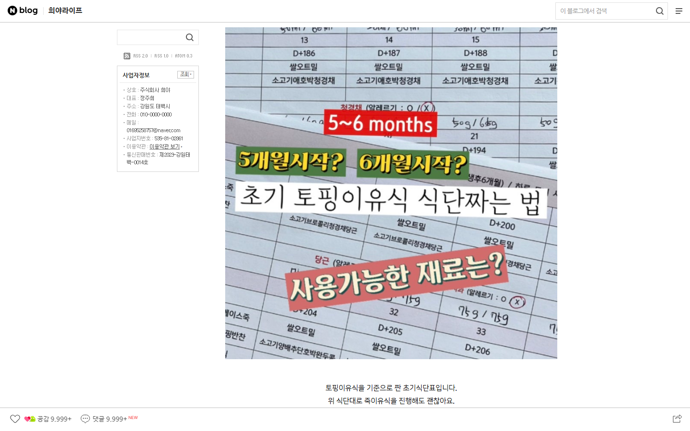
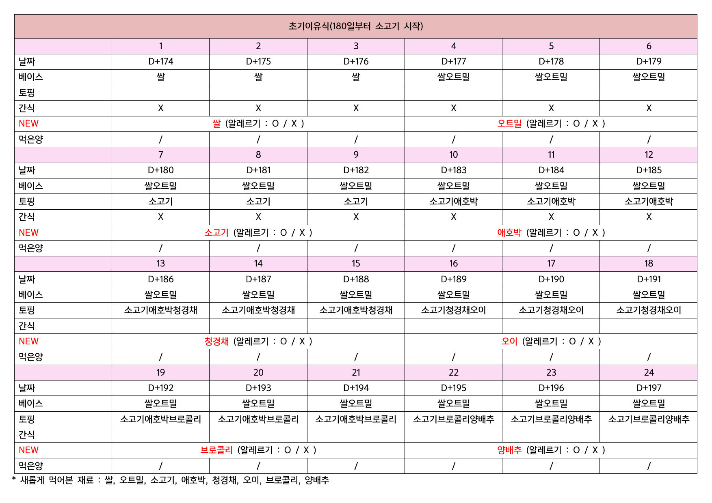
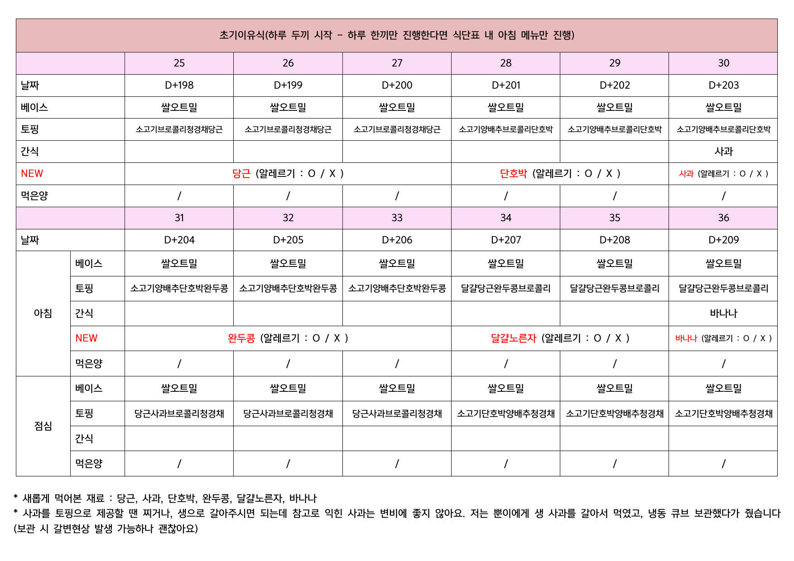
암호 PDF를 매번 열고 오늘 행을 찾는 수고를 줄인다.
초기·중기·후기 원문과 후속 자료로 다시 연결된다.
매일 체크와 메모, 다음 식단 재방문이 자연스럽게 생긴다.
카드 약속36일 식단·하루 한 개 체크
첫 화면현재 날짜의 식단 한 장만 표시
모바일3일 묶음을 접고 현재 묶음만 자동으로 펼친다.
판정현재 구조에 적합. 36개 전체를 한 화면에 펼치면 과밀하므로 진행 위치 중심 UI가 필요
저장하면 가장 먼저 보이는 내용D+174~176
- D+174 식단 제공
- D+175 식단 제공
- D+176 식단 제공
실제 적용 데이터
Flow 콘텐츠 전체
Flow 1D+174부터 36일 식단12 Step · 36 Item
D+174~176
3D+177~179
3D+180~182
3D+180 식단 제공
한 끼: 쌀·오트밀 미음 + 소고기 · 먹은 양이나 반응을 남기려면 이 Item의 개인 메모를 사용한다.
원문 근거 1개
- D+180 식단첨부 PDF D+180 행
D+181 식단 제공
한 끼: 쌀·오트밀 미음 + 소고기 · 먹은 양이나 반응을 남기려면 이 Item의 개인 메모를 사용한다.
원문 근거 1개
- D+181 식단첨부 PDF D+181 행
D+182 식단 제공
한 끼: 쌀·오트밀 미음 + 소고기 · 먹은 양이나 반응을 남기려면 이 Item의 개인 메모를 사용한다.
원문 근거 1개
- D+182 식단첨부 PDF D+182 행
D+183~185
3D+183 식단 제공
한 끼: 쌀·오트밀 미음 + 소고기 + 애호박 · 먹은 양이나 반응을 남기려면 이 Item의 개인 메모를 사용한다.
원문 근거 1개
- D+183 식단첨부 PDF D+183 행
D+184 식단 제공
한 끼: 쌀·오트밀 미음 + 소고기 + 애호박 · 먹은 양이나 반응을 남기려면 이 Item의 개인 메모를 사용한다.
원문 근거 1개
- D+184 식단첨부 PDF D+184 행
D+185 식단 제공
한 끼: 쌀·오트밀 미음 + 소고기 + 애호박 · 먹은 양이나 반응을 남기려면 이 Item의 개인 메모를 사용한다.
원문 근거 1개
- D+185 식단첨부 PDF D+185 행
D+186~188
3D+186 식단 제공
한 끼: 쌀·오트밀 미음 + 소고기 + 애호박 + 청경채 · 먹은 양이나 반응을 남기려면 이 Item의 개인 메모를 사용한다.
원문 근거 1개
- D+186 식단첨부 PDF D+186 행
D+187 식단 제공
한 끼: 쌀·오트밀 미음 + 소고기 + 애호박 + 청경채 · 먹은 양이나 반응을 남기려면 이 Item의 개인 메모를 사용한다.
원문 근거 1개
- D+187 식단첨부 PDF D+187 행
D+188 식단 제공
한 끼: 쌀·오트밀 미음 + 소고기 + 애호박 + 청경채 · 먹은 양이나 반응을 남기려면 이 Item의 개인 메모를 사용한다.
원문 근거 1개
- D+188 식단첨부 PDF D+188 행
D+189~191
3D+189 식단 제공
한 끼: 쌀·오트밀 미음 + 소고기 + 청경채 + 오이 · 먹은 양이나 반응을 남기려면 이 Item의 개인 메모를 사용한다.
원문 근거 1개
- D+189 식단첨부 PDF D+189 행
D+190 식단 제공
한 끼: 쌀·오트밀 미음 + 소고기 + 청경채 + 오이 · 먹은 양이나 반응을 남기려면 이 Item의 개인 메모를 사용한다.
원문 근거 1개
- D+190 식단첨부 PDF D+190 행
D+191 식단 제공
한 끼: 쌀·오트밀 미음 + 소고기 + 청경채 + 오이 · 먹은 양이나 반응을 남기려면 이 Item의 개인 메모를 사용한다.
원문 근거 1개
- D+191 식단첨부 PDF D+191 행
D+192~194
3D+192 식단 제공
한 끼: 쌀·오트밀 미음 + 소고기 + 애호박 + 브로콜리 · 먹은 양이나 반응을 남기려면 이 Item의 개인 메모를 사용한다.
원문 근거 1개
- D+192 식단첨부 PDF D+192 행
D+193 식단 제공
한 끼: 쌀·오트밀 미음 + 소고기 + 애호박 + 브로콜리 · 먹은 양이나 반응을 남기려면 이 Item의 개인 메모를 사용한다.
원문 근거 1개
- D+193 식단첨부 PDF D+193 행
D+194 식단 제공
한 끼: 쌀·오트밀 미음 + 소고기 + 애호박 + 브로콜리 · 먹은 양이나 반응을 남기려면 이 Item의 개인 메모를 사용한다.
원문 근거 1개
- D+194 식단첨부 PDF D+194 행
D+195~197
3D+195 식단 제공
한 끼: 쌀·오트밀 미음 + 소고기 + 브로콜리 + 양배추 · 먹은 양이나 반응을 남기려면 이 Item의 개인 메모를 사용한다.
원문 근거 1개
- D+195 식단첨부 PDF D+195 행
D+196 식단 제공
한 끼: 쌀·오트밀 미음 + 소고기 + 브로콜리 + 양배추 · 먹은 양이나 반응을 남기려면 이 Item의 개인 메모를 사용한다.
원문 근거 1개
- D+196 식단첨부 PDF D+196 행
D+197 식단 제공
한 끼: 쌀·오트밀 미음 + 소고기 + 브로콜리 + 양배추 · 먹은 양이나 반응을 남기려면 이 Item의 개인 메모를 사용한다.
원문 근거 1개
- D+197 식단첨부 PDF D+197 행
D+198~200
3D+198 식단 제공
한 끼: 쌀·오트밀 미음 + 소고기 + 브로콜리 + 청경채 + 당근 · 먹은 양이나 반응을 남기려면 이 Item의 개인 메모를 사용한다.
원문 근거 1개
- D+198 식단첨부 PDF D+198 행
D+199 식단 제공
한 끼: 쌀·오트밀 미음 + 소고기 + 브로콜리 + 청경채 + 당근 · 먹은 양이나 반응을 남기려면 이 Item의 개인 메모를 사용한다.
원문 근거 1개
- D+199 식단첨부 PDF D+199 행
D+200 식단 제공
한 끼: 쌀·오트밀 미음 + 소고기 + 브로콜리 + 청경채 + 당근 · 먹은 양이나 반응을 남기려면 이 Item의 개인 메모를 사용한다.
원문 근거 1개
- D+200 식단첨부 PDF D+200 행
D+201~203
3D+201 식단 제공
한 끼: 쌀·오트밀 미음 + 소고기 + 양배추 + 브로콜리 + 단호박 · 먹은 양이나 반응을 남기려면 이 Item의 개인 메모를 사용한다.
원문 근거 1개
- D+201 식단첨부 PDF D+201 행
D+202 식단 제공
한 끼: 쌀·오트밀 미음 + 소고기 + 양배추 + 브로콜리 + 단호박 · 먹은 양이나 반응을 남기려면 이 Item의 개인 메모를 사용한다.
원문 근거 1개
- D+202 식단첨부 PDF D+202 행
D+203 식단 제공
한 끼: 쌀·오트밀 미음 + 소고기 + 양배추 + 브로콜리 + 단호박 · 간식: 사과 · 먹은 양이나 반응을 남기려면 이 Item의 개인 메모를 사용한다.
원문 근거 1개
- D+203 식단첨부 PDF D+203 행
D+204~206
3D+204 식단 제공
아침: 쌀·오트밀 + 소고기 + 양배추 + 단호박 + 완두콩 · 점심: 쌀·오트밀 + 당근 + 사과 + 브로콜리 + 청경채 · 먹은 양이나 반응을 남기려면 이 Item의 개인 메모를 사용한다.
원문 근거 1개
- D+204 식단첨부 PDF D+204 행
D+205 식단 제공
아침: 쌀·오트밀 + 소고기 + 양배추 + 단호박 + 완두콩 · 점심: 쌀·오트밀 + 당근 + 사과 + 브로콜리 + 청경채 · 먹은 양이나 반응을 남기려면 이 Item의 개인 메모를 사용한다.
원문 근거 1개
- D+205 식단첨부 PDF D+205 행
D+206 식단 제공
아침: 쌀·오트밀 + 소고기 + 양배추 + 단호박 + 완두콩 · 점심: 쌀·오트밀 + 당근 + 사과 + 브로콜리 + 청경채 · 간식: 바나나 · 먹은 양이나 반응을 남기려면 이 Item의 개인 메모를 사용한다.
원문 근거 1개
- D+206 식단첨부 PDF D+206 행
D+207~209
3D+207 식단 제공
아침: 쌀·오트밀 + 달걀 + 당근 + 완두콩 + 브로콜리 · 점심: 쌀·오트밀 + 소고기 + 단호박 + 양배추 + 청경채 · 먹은 양이나 반응을 남기려면 이 Item의 개인 메모를 사용한다.
원문 근거 1개
- D+207 식단첨부 PDF D+207 행
D+208 식단 제공
아침: 쌀·오트밀 + 달걀 + 당근 + 완두콩 + 브로콜리 · 점심: 쌀·오트밀 + 소고기 + 단호박 + 양배추 + 청경채 · 먹은 양이나 반응을 남기려면 이 Item의 개인 메모를 사용한다.
원문 근거 1개
- D+208 식단첨부 PDF D+208 행
D+209 식단 제공
아침: 쌀·오트밀 + 달걀 + 당근 + 완두콩 + 브로콜리 · 점심: 쌀·오트밀 + 소고기 + 단호박 + 양배추 + 청경채 · 간식: 바나나 · 먹은 양이나 반응을 남기려면 이 Item의 개인 메모를 사용한다.
원문 근거 1개
- D+209 식단첨부 PDF D+209 행
원문 행 ↔ Item 대응 전체 36개
- D+174 식단 제공D+174부터 36일 식단 · D+174~176
- D+175 식단 제공D+174부터 36일 식단 · D+174~176
- D+176 식단 제공D+174부터 36일 식단 · D+174~176
- D+177 식단 제공D+174부터 36일 식단 · D+177~179
- D+178 식단 제공D+174부터 36일 식단 · D+177~179
- D+179 식단 제공D+174부터 36일 식단 · D+177~179
- D+180 식단 제공D+174부터 36일 식단 · D+180~182
- D+181 식단 제공D+174부터 36일 식단 · D+180~182
- D+182 식단 제공D+174부터 36일 식단 · D+180~182
- D+183 식단 제공D+174부터 36일 식단 · D+183~185
- D+184 식단 제공D+174부터 36일 식단 · D+183~185
- D+185 식단 제공D+174부터 36일 식단 · D+183~185
- D+186 식단 제공D+174부터 36일 식단 · D+186~188
- D+187 식단 제공D+174부터 36일 식단 · D+186~188
- D+188 식단 제공D+174부터 36일 식단 · D+186~188
- D+189 식단 제공D+174부터 36일 식단 · D+189~191
- D+190 식단 제공D+174부터 36일 식단 · D+189~191
- D+191 식단 제공D+174부터 36일 식단 · D+189~191
- D+192 식단 제공D+174부터 36일 식단 · D+192~194
- D+193 식단 제공D+174부터 36일 식단 · D+192~194
- D+194 식단 제공D+174부터 36일 식단 · D+192~194
- D+195 식단 제공D+174부터 36일 식단 · D+195~197
- D+196 식단 제공D+174부터 36일 식단 · D+195~197
- D+197 식단 제공D+174부터 36일 식단 · D+195~197
- D+198 식단 제공D+174부터 36일 식단 · D+198~200
- D+199 식단 제공D+174부터 36일 식단 · D+198~200
- D+200 식단 제공D+174부터 36일 식단 · D+198~200
- D+201 식단 제공D+174부터 36일 식단 · D+201~203
- D+202 식단 제공D+174부터 36일 식단 · D+201~203
- D+203 식단 제공D+174부터 36일 식단 · D+201~203
- D+204 식단 제공D+174부터 36일 식단 · D+204~206
- D+205 식단 제공D+174부터 36일 식단 · D+204~206
- D+206 식단 제공D+174부터 36일 식단 · D+204~206
- D+207 식단 제공D+174부터 36일 식단 · D+207~209
- D+208 식단 제공D+174부터 36일 식단 · D+207~209
- D+209 식단 제공D+174부터 36일 식단 · D+207~209
수요댓글 9,999+ 표시초기·중기·후기 관련 글에서도 대규모 파일 요청이 반복됨
소통파일과 비밀번호 요청 댓글에 제작자가 반복 응답댓글에서 사용 시기와 재료 질문이 이어짐
복사 의도비밀번호가 있는 PDF 식단표와 큐브 재고표 배포
비즈니스후속 이유식 시리즈와 제작자 채널 재방문 동기가 강함
점수와 감점 이유 · 97/100
댓글 9,999+와 여러 단계 식단표 글의 반복 수요가 직접 보인다.
파일·비밀번호 요청과 제작자 답변이 대량으로 확인된다.
PDF 식단표를 내려받아 매일 확인하는 행동이 원문 자체에서 검증된다.
후속 단계 콘텐츠로 재방문할 이유는 강하다. 직접 상품 연결은 확인되지 않아 3점 감점했다.
원문 행이 곧 실행 단위가 되고, 링크·설명은 memo로 보내면 현재 Flow/Step/Item 틀 안에서 과밀 없이 표현된다.
영아 식사라는 고빈도 가족 실행 영역을 단독으로 채운다.
Go집·살림
이사 D-30 체크리스트
이사일 하나를 넣으면 D-30부터 도착지 정리까지 해야 할 일이 생긴다.
핵심 수요원문 조회 98,401·스크랩 20
소통 증거비교 원문 댓글 26·공유 4,182
전체 구조1 Flow · 6 Step · 27 Item
최초 입력날짜 없이 저장 0개, 일정화할 때 이사일 1개
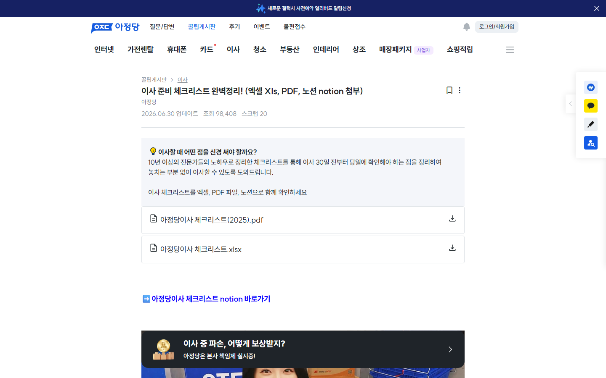
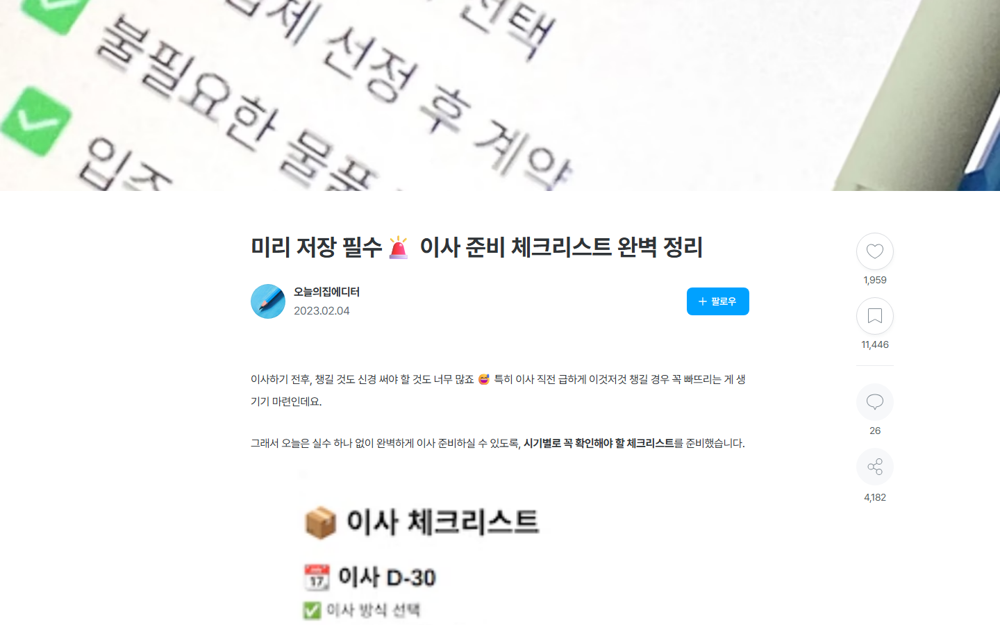
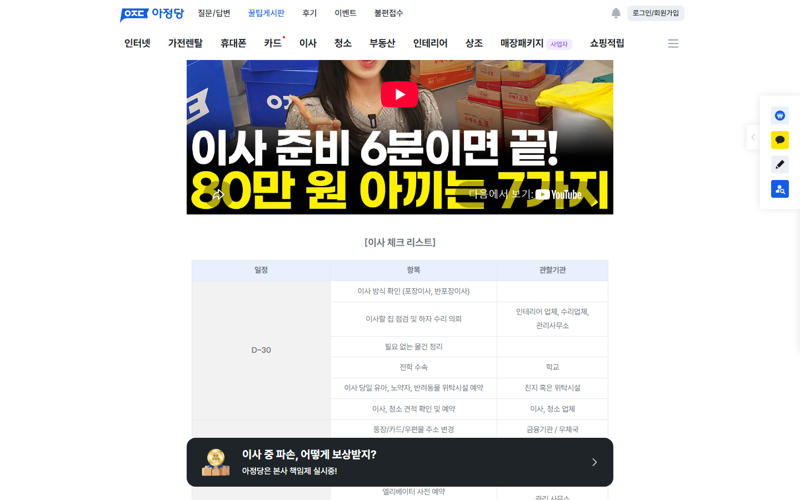
여러 파일에서 이사 시기별 항목을 다시 옮겨 적는 시간을 줄인다.
이사·청소 견적과 원문 다운로드로 사용자를 되돌린다.
기준일 일정화, 완료 체크, 가족 공유, 캘린더 export가 발생한다.
카드 약속D-30·D-10·D-3·D-1·당일 27개 묶음 행동
첫 화면가장 가까운 D-day 구간의 첫 행동을 표시
모바일지난 구간은 접고 현재·다음 구간만 펼친다.
판정현재 상대 날짜·Item 모델에 적합
저장하면 가장 먼저 보이는 내용D-30 · 큰 결정과 예약
- 이사 방식과 이사업체 정하기
- 새집 상태 확인하고 필요한 수리 잡기
- 가져가지 않을 물건 처분 시작하기
외 1개 · 전체 내용은 아래에서 확인
실제 적용 데이터
Flow 콘텐츠 전체
Flow 1이사 D-30 체크리스트6 Step · 27 Item
D-30 · 큰 결정과 예약
4이사 방식과 이사업체 정하기
선택한 방식, 업체명, 견적 링크와 예약 내용을 같은 메모에 적는다.
원문 근거 3개
- 포장이사·반포장이사·일반이사 중 방식 선택원문 D-30 행 · 포장이사·반포장이사·일반이사 중 방식 선택
- 이사업체 견적 비교와 예약원문 D-30 행 · 이사업체 견적 비교와 예약
- 입주청소 업체 견적 비교와 예약원문 D-30 행 · 입주청소 업체 견적 비교와 예약
새집 상태 확인하고 필요한 수리 잡기
새집 현장 점검 · 도배·장판·수리 필요 항목 확인과 일정 잡기
원문 근거 2개
- 새집 현장 점검원문 D-30 행 · 새집 현장 점검
- 도배·장판·수리 필요 항목 확인과 일정 잡기원문 D-30 행 · 도배·장판·수리 필요 항목 확인과 일정 잡기
가져가지 않을 물건 처분 시작하기
대형폐기물·중고판매·기부 등 처분 대상 정리
원문 근거 1개
- 대형폐기물·중고판매·기부 등 처분 대상 정리원문 D-30 행 · 대형폐기물·중고판매·기부 등 처분 대상 정리
학교 전학과 돌봄 계획 세우기
자녀 학교 전학 절차 확인 · 이사 당일 아이·어르신·반려동물 돌봄 계획
원문 근거 2개
- 자녀 학교 전학 절차 확인원문 D-30 행 · 자녀 학교 전학 절차 확인
- 이사 당일 아이·어르신·반려동물 돌봄 계획원문 D-30 행 · 이사 당일 아이·어르신·반려동물 돌봄 계획
D-10 · 주소·서비스·짐 줄이기
5우편·배송·전출 주소 변경하기
우편물 주소 이전 신청 · 정기배송 주소 변경 또는 중지 · 관리사무소에 퇴거 일정 알리기
원문 근거 3개
- 우편물 주소 이전 신청원문 D-10 행 · 우편물 주소 이전 신청
- 정기배송 주소 변경 또는 중지원문 D-10 행 · 정기배송 주소 변경 또는 중지
- 관리사무소에 퇴거 일정 알리기원문 D-10 행 · 관리사무소에 퇴거 일정 알리기
엘리베이터·사다리차·주차 예약하기
출발지와 도착지 엘리베이터 예약 · 사다리차 사용 여부와 주차 공간 확인
원문 근거 2개
- 출발지와 도착지 엘리베이터 예약원문 D-10 행 · 출발지와 도착지 엘리베이터 예약
- 사다리차 사용 여부와 주차 공간 확인원문 D-10 행 · 사다리차 사용 여부와 주차 공간 확인
폐기물과 남은 짐 처리하기
종량제 봉투와 폐기물 스티커 준비 · 대형폐기물 수거 신청 · 열쇠·리모컨·설명서 한곳에 모으기
원문 근거 3개
- 종량제 봉투와 폐기물 스티커 준비원문 D-10 행 · 종량제 봉투와 폐기물 스티커 준비
- 대형폐기물 수거 신청원문 D-10 행 · 대형폐기물 수거 신청
- 열쇠·리모컨·설명서 한곳에 모으기원문 D-10 행 · 열쇠·리모컨·설명서 한곳에 모으기
냉장고 비우고 새집 물품 배치 정하기
냉장고 식재료 소진 시작 · 새집에 필요한 물품 주문 · 가구·가전 배치도 정리
원문 근거 3개
- 냉장고 식재료 소진 시작원문 D-10 행 · 냉장고 식재료 소진 시작
- 새집에 필요한 물품 주문원문 D-10 행 · 새집에 필요한 물품 주문
- 가구·가전 배치도 정리원문 D-10 행 · 가구·가전 배치도 정리
인터넷·정수기 등 이전 신청하기
인터넷·TV 이전 설치 신청 · 정수기 등 렌탈 기기 이전 신청
원문 근거 2개
- 인터넷·TV 이전 설치 신청원문 D-10 행 · 인터넷·TV 이전 설치 신청
- 정수기 등 렌탈 기기 이전 신청원문 D-10 행 · 정수기 등 렌탈 기기 이전 신청
D-3 · 해지와 당일 준비
5도시가스 철거·설치 예약하기
출발지 도시가스 철거 예약 · 도착지 도시가스 설치 예약
원문 근거 2개
- 출발지 도시가스 철거 예약원문 D-3 행 · 출발지 도시가스 철거 예약
- 도착지 도시가스 설치 예약원문 D-3 행 · 도착지 도시가스 설치 예약
기존 집 자동이체 해지하기
전기·수도·가스·관리비 자동이체 해지 또는 변경
원문 근거 1개
- 전기·수도·가스·관리비 자동이체 해지 또는 변경원문 D-3 행 · 전기·수도·가스·관리비 자동이체 해지 또는 변경
세탁기 배수하고 운반 상태 만들기
세탁기 물 빼기와 운반 준비
원문 근거 1개
- 세탁기 물 빼기와 운반 준비원문 D-3 행 · 세탁기 물 빼기와 운반 준비
임대차 권리 서류 확인하기
필요한 경우 임차권·보증금 관련 서류 확인
원문 근거 1개
- 필요한 경우 임차권·보증금 관련 서류 확인원문 D-3 행 · 필요한 경우 임차권·보증금 관련 서류 확인
당일 바로 쓸 짐을 따로 싸기
신분증·충전기·세면도구·약·옷 등 당일 물품 분리
원문 근거 1개
- 신분증·충전기·세면도구·약·옷 등 당일 물품 분리원문 D-3 행 · 신분증·충전기·세면도구·약·옷 등 당일 물품 분리
D-1 · 돈·귀중품·인계 확인
5당일 일정·송금 한도·잔금 확인하기
이사업체와 최종 시간 확인 · 은행 이체 한도 확인 · 보증금·잔금 지급 계획 확인
원문 근거 3개
- 이사업체와 최종 시간 확인원문 D-1 행 · 이사업체와 최종 시간 확인
- 은행 이체 한도 확인원문 D-1 행 · 은행 이체 한도 확인
- 보증금·잔금 지급 계획 확인원문 D-1 행 · 보증금·잔금 지급 계획 확인
출발지·도착지 주차 다시 확인하기
이삿짐 차량 주차 위치 최종 확인
원문 근거 1개
- 이삿짐 차량 주차 위치 최종 확인원문 D-1 행 · 이삿짐 차량 주차 위치 최종 확인
귀중품과 중요서류 직접 보관하기
현금·귀중품·중요서류 별도 보관
원문 근거 1개
- 현금·귀중품·중요서류 별도 보관원문 D-1 행 · 현금·귀중품·중요서류 별도 보관
열쇠·리모컨·비밀번호 인계 준비하기
출발지 열쇠·리모컨 모으기 · 도착지 공동현관·도어락 정보 확인
원문 근거 2개
- 출발지 열쇠·리모컨 모으기원문 D-1 행 · 출발지 열쇠·리모컨 모으기
- 도착지 공동현관·도어락 정보 확인원문 D-1 행 · 도착지 공동현관·도어락 정보 확인
가전·가구 상태 사진 남기기
운반 전 가전·가구 외관 사진 촬영 · 어항이 있으면 이동 준비
원문 근거 2개
- 운반 전 가전·가구 외관 사진 촬영원문 D-1 행 · 운반 전 가전·가구 외관 사진 촬영
- 어항이 있으면 이동 준비원문 D-1 행 · 어항이 있으면 이동 준비
이사 당일 · 출발지 마감
3전기·수도·가스·관리비 정산하기
출발지 전기·수도·가스 사용량 확인과 정산 · 관리비 정산
원문 근거 2개
- 출발지 전기·수도·가스 사용량 확인과 정산원문 이사 당일 기존 집 행 · 출발지 전기·수도·가스 사용량 확인과 정산
- 관리비 정산원문 이사 당일 기존 집 행 · 관리비 정산
장기수선충당금 환급 확인하기
세입자인 경우 장기수선충당금 반환 요청
원문 근거 1개
- 세입자인 경우 장기수선충당금 반환 요청원문 이사 당일 기존 집 행 · 세입자인 경우 장기수선충당금 반환 요청
남은 물건 확인하고 열쇠 반납하기
방·수납장·계량기 주변 남은 물건 확인 · 집주인 또는 관리실에 열쇠 반납
원문 근거 2개
- 방·수납장·계량기 주변 남은 물건 확인원문 이사 당일 기존 집 행 · 방·수납장·계량기 주변 남은 물건 확인
- 집주인 또는 관리실에 열쇠 반납원문 이사 당일 기존 집 행 · 집주인 또는 관리실에 열쇠 반납
이사 당일 · 도착지 시작
5분실·파손 확인하고 이사업체 정산하기
짐 분실·파손 여부 확인 · 이사업체 잔금 정산
원문 근거 2개
- 짐 분실·파손 여부 확인원문 이사 당일 새집 행 · 짐 분실·파손 여부 확인
- 이사업체 잔금 정산원문 이사 당일 새집 행 · 이사업체 잔금 정산
인터넷·TV와 도어락 확인하기
인터넷·TV 연결 확인 · 도어락 비밀번호 변경
원문 근거 2개
- 인터넷·TV 연결 확인원문 이사 당일 새집 행 · 인터넷·TV 연결 확인
- 도어락 비밀번호 변경원문 이사 당일 새집 행 · 도어락 비밀번호 변경
잔금·관리비·열쇠 인수 마치기
주택 잔금 또는 보증금 정산 · 관리비 확인 · 열쇠·리모컨 인수
원문 근거 3개
- 주택 잔금 또는 보증금 정산원문 이사 당일 새집 행 · 주택 잔금 또는 보증금 정산
- 관리비 확인원문 이사 당일 새집 행 · 관리비 확인
- 열쇠·리모컨 인수원문 이사 당일 새집 행 · 열쇠·리모컨 인수
전기·수도 명의와 가스 개통하기
전기·수도 명의 변경 · 도착지 도시가스 개통
원문 근거 2개
- 전기·수도 명의 변경원문 이사 당일 새집 행 · 전기·수도 명의 변경
- 도착지 도시가스 개통원문 이사 당일 새집 행 · 도착지 도시가스 개통
전입신고와 확정일자 처리하기
전입신고 · 필요한 경우 확정일자 받기
원문 근거 2개
- 전입신고원문 이사 당일 새집 행 · 전입신고
- 필요한 경우 확정일자 받기원문 이사 당일 새집 행 · 필요한 경우 확정일자 받기
원문 행 ↔ Item 대응 전체 27개
- 이사 방식과 이사업체 정하기이사 D-30 체크리스트 · D-30 · 큰 결정과 예약
- 새집 상태 확인하고 필요한 수리 잡기이사 D-30 체크리스트 · D-30 · 큰 결정과 예약
- 가져가지 않을 물건 처분 시작하기이사 D-30 체크리스트 · D-30 · 큰 결정과 예약
- 학교 전학과 돌봄 계획 세우기이사 D-30 체크리스트 · D-30 · 큰 결정과 예약
- 우편·배송·전출 주소 변경하기이사 D-30 체크리스트 · D-10 · 주소·서비스·짐 줄이기
- 엘리베이터·사다리차·주차 예약하기이사 D-30 체크리스트 · D-10 · 주소·서비스·짐 줄이기
- 폐기물과 남은 짐 처리하기이사 D-30 체크리스트 · D-10 · 주소·서비스·짐 줄이기
- 냉장고 비우고 새집 물품 배치 정하기이사 D-30 체크리스트 · D-10 · 주소·서비스·짐 줄이기
- 인터넷·정수기 등 이전 신청하기이사 D-30 체크리스트 · D-10 · 주소·서비스·짐 줄이기
- 도시가스 철거·설치 예약하기이사 D-30 체크리스트 · D-3 · 해지와 당일 준비
- 기존 집 자동이체 해지하기이사 D-30 체크리스트 · D-3 · 해지와 당일 준비
- 세탁기 배수하고 운반 상태 만들기이사 D-30 체크리스트 · D-3 · 해지와 당일 준비
- 임대차 권리 서류 확인하기이사 D-30 체크리스트 · D-3 · 해지와 당일 준비
- 당일 바로 쓸 짐을 따로 싸기이사 D-30 체크리스트 · D-3 · 해지와 당일 준비
- 당일 일정·송금 한도·잔금 확인하기이사 D-30 체크리스트 · D-1 · 돈·귀중품·인계 확인
- 출발지·도착지 주차 다시 확인하기이사 D-30 체크리스트 · D-1 · 돈·귀중품·인계 확인
- 귀중품과 중요서류 직접 보관하기이사 D-30 체크리스트 · D-1 · 돈·귀중품·인계 확인
- 열쇠·리모컨·비밀번호 인계 준비하기이사 D-30 체크리스트 · D-1 · 돈·귀중품·인계 확인
- 가전·가구 상태 사진 남기기이사 D-30 체크리스트 · D-1 · 돈·귀중품·인계 확인
- 전기·수도·가스·관리비 정산하기이사 D-30 체크리스트 · 이사 당일 · 출발지 마감
- 장기수선충당금 환급 확인하기이사 D-30 체크리스트 · 이사 당일 · 출발지 마감
- 남은 물건 확인하고 열쇠 반납하기이사 D-30 체크리스트 · 이사 당일 · 출발지 마감
- 분실·파손 확인하고 이사업체 정산하기이사 D-30 체크리스트 · 이사 당일 · 도착지 시작
- 인터넷·TV와 도어락 확인하기이사 D-30 체크리스트 · 이사 당일 · 도착지 시작
- 잔금·관리비·열쇠 인수 마치기이사 D-30 체크리스트 · 이사 당일 · 도착지 시작
- 전기·수도 명의와 가스 개통하기이사 D-30 체크리스트 · 이사 당일 · 도착지 시작
- 전입신고와 확정일자 처리하기이사 D-30 체크리스트 · 이사 당일 · 도착지 시작
수요원문 조회 98,401·스크랩 20비교 원문은 조회 138,823·스크랩 11,446·좋아요 1,959
소통비교 원문 댓글 26·공유 4,182원문은 견적 상담과 후기 경로를 제공
복사 의도XLSX·PDF·Notion 체크리스트 동시 제공
비즈니스이사·청소 견적과 상담으로 직접 연결
점수와 감점 이유 · 97/100
두 원문 모두 9만~13만 조회를 넘고 스크랩 수치도 확인된다.
비교 원문 댓글 26과 공유 4,182, 원문의 상담 경로가 보인다. 원문 댓글 수의 직접 라벨은 불명확해 3점 감점했다.
XLSX·PDF·Notion을 모두 제공해 복사 의도가 매우 강하다.
체크리스트 사용 직후 이사·청소 견적으로 자연스럽게 연결된다.
원문 행이 곧 실행 단위가 되고, 링크·설명은 memo로 보내면 현재 Flow/Step/Item 틀 안에서 과밀 없이 표현된다.
고관여 D-day 생활 업무의 대표 콘텐츠다.
Go여행·외출·행사
결혼 준비 D-12개월 타임라인
결혼 예정일을 넣으면 원문의 6개 시기와 계약·예약 항목이 순서대로 생긴다.
핵심 수요댓글 1,102개
소통 증거Notion 링크 요청과 제작자 응답
전체 구조1 Flow · 6 Step · 32 Item
최초 입력날짜 없이 저장 0개, 일정화할 때 예식일 1개
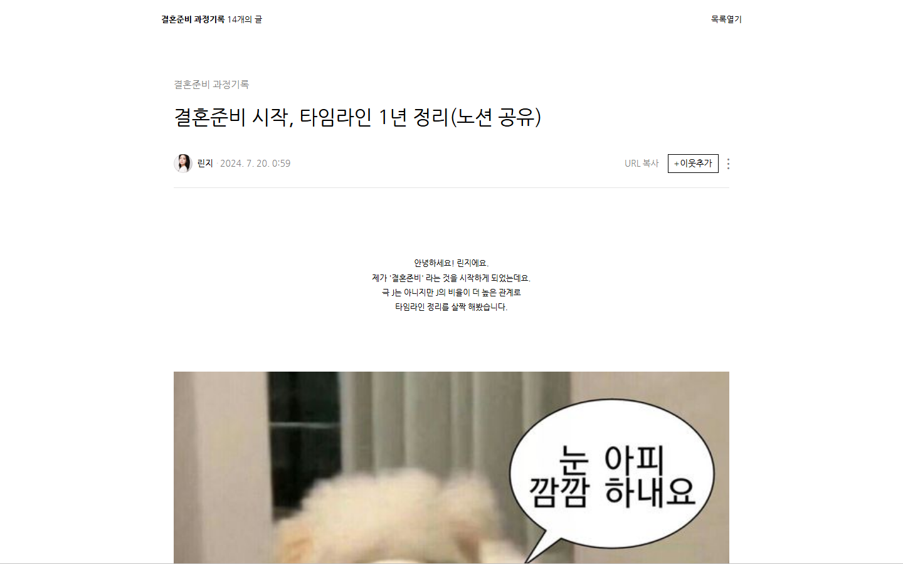
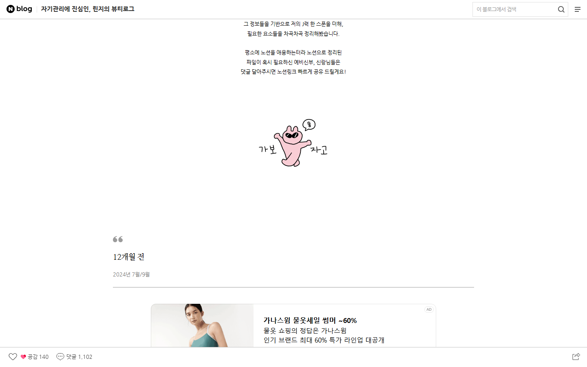
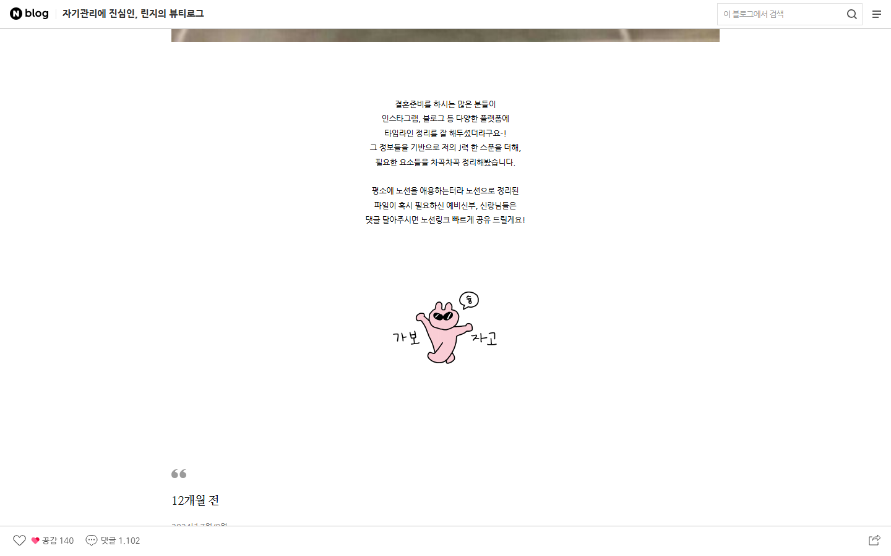
업체·예약·계약 시기를 놓치지 않고 자신의 예식일에 맞춘다.
14개 후속 글과 Notion 원문, 업체 관련 콘텐츠로 사용자를 돌려보낸다.
장기 D-day 일정, 계약 체크, 파트너 공유, 메모 재방문이 생긴다.
카드 약속D-12개월부터 D-1개월까지 30개 핵심 준비 행동
첫 화면현재 시기의 계약·예약 행동을 우선 표시
모바일시기별 접기와 선택 항목 숨김 토글 제공
판정현재 구조에 적합. 선택형 미용·이벤트 항목은 기본 접힘 필요
저장하면 가장 먼저 보이는 내용D-12개월 · 예식 기반 확정
- 예식장 비교하고 최종 계약하기
- 웨딩플래너 상담하고 계약하기
- 본식 사진·영상 업체 계약하기
외 1개 · 전체 내용은 아래에서 확인
실제 적용 데이터
Flow 콘텐츠 전체
Flow 1결혼 준비 D-12개월 타임라인6 Step · 32 Item
D-12개월 · 예식 기반 확정
4예식장 비교하고 최종 계약하기
예식 날짜와 예산 정하기 · 예식장 후보 목록 만들기 · 예식장 방문과 견적 비교 · 예식장 최종 계약
원문 근거 4개
- 예식 날짜와 예산 정하기원문 12개월 전 · 예식 날짜와 예산 정하기
- 예식장 후보 목록 만들기원문 12개월 전 · 예식장 후보 목록 만들기
- 예식장 방문과 견적 비교원문 12개월 전 · 예식장 방문과 견적 비교
- 예식장 최종 계약원문 12개월 전 · 예식장 최종 계약
웨딩플래너 상담하고 계약하기
플래너 상담 · 플래너 계약
본식 사진·영상 업체 계약하기
본식 스냅 업체 계약 · 본식 DVD 업체 계약
원문 근거 2개
- 본식 스냅 업체 계약원문 12개월 전 · 본식 스냅 업체 계약
- 본식 DVD 업체 계약원문 12개월 전 · 본식 DVD 업체 계약
아이폰 스냅 예약 여부 정하기선택
아이폰 스냅 업체 확인과 예약
원문 근거 1개
- 아이폰 스냅 업체 확인과 예약원문 12개월 전 · 아이폰 스냅 업체 확인과 예약
D-10개월 · 촬영과 진행자 예약
3스튜디오·드레스·메이크업 계약하기
스튜디오 촬영 일정 확인 · 드레스 투어와 가봉 일정 확인 · 메이크업 업체 계약
원문 근거 3개
- 스튜디오 촬영 일정 확인원문 10개월 전 · 스튜디오 촬영 일정 확인
- 드레스 투어와 가봉 일정 확인원문 10개월 전 · 드레스 투어와 가봉 일정 확인
- 메이크업 업체 계약원문 10개월 전 · 메이크업 업체 계약
촬영 부가 준비 확인하기
촬영 꽃과 헤어 준비 여부 확인 · 촬영 영상 제공 여부 확인
원문 근거 2개
- 촬영 꽃과 헤어 준비 여부 확인원문 10개월 전 · 촬영 꽃과 헤어 준비 여부 확인
- 촬영 영상 제공 여부 확인원문 10개월 전 · 촬영 영상 제공 여부 확인
사회자와 축가 일정 잡기
사회자 섭외와 일정 확인 · 축가 담당자 섭외와 일정 확인
원문 근거 2개
- 사회자 섭외와 일정 확인원문 10개월 전 · 사회자 섭외와 일정 확인
- 축가 담당자 섭외와 일정 확인원문 10개월 전 · 축가 담당자 섭외와 일정 확인
D-7개월 · 의상과 가족 준비
5신랑 예복과 구두 준비하기
신랑 예복 업체와 디자인 결정 · 신랑 구두 준비
원문 근거 2개
- 신랑 예복 업체와 디자인 결정원문 7개월 전 · 신랑 예복 업체와 디자인 결정
- 신랑 구두 준비원문 7개월 전 · 신랑 구두 준비
혼주 메이크업 예약하기
양가 혼주 메이크업 예약
원문 근거 1개
- 양가 혼주 메이크업 예약원문 7개월 전 · 양가 혼주 메이크업 예약
촬영 드레스 가봉하기
촬영용 드레스 가봉
원문 근거 1개
- 촬영용 드레스 가봉원문 7개월 전 · 촬영용 드레스 가봉
촬영 부케 준비하기
촬영 부케 결정과 예약
원문 근거 1개
- 촬영 부케 결정과 예약원문 7개월 전 · 촬영 부케 결정과 예약
신부 관리 일정 정하기선택
신부 피부·체형 관리 여부와 일정 결정
원문 근거 1개
- 신부 피부·체형 관리 여부와 일정 결정원문 7개월 전 · 신부 피부·체형 관리 여부와 일정 결정
D-6개월 · 촬영·여행·신혼집 구매
6스튜디오 촬영하고 수정본 고르기
스튜디오 촬영 · 사진 셀렉과 수정본 확인
원문 근거 2개
- 스튜디오 촬영원문 6개월 전 · 스튜디오 촬영
- 사진 셀렉과 수정본 확인원문 6개월 전 · 사진 셀렉과 수정본 확인
신혼여행 예약하기
신혼여행지와 일정 결정 · 항공·숙소 예약
원문 근거 2개
- 신혼여행지와 일정 결정원문 6개월 전 · 신혼여행지와 일정 결정
- 항공·숙소 예약원문 6개월 전 · 항공·숙소 예약
가전·가구 구매 목록 정하기
신혼집 가전 목록 · 신혼집 가구 목록
혼주 한복 준비하기
양가 혼주 한복 업체와 일정 결정
원문 근거 1개
- 양가 혼주 한복 업체와 일정 결정원문 6개월 전 · 양가 혼주 한복 업체와 일정 결정
예물 반지 비교하고 계약하기
웨딩링 후보 목록 · 업체 견적 비교 · 최종 계약
신랑·신부 추가 관리 여부 정하기선택
신부 추가 관리 여부 결정 · 신랑 관리 여부 결정
원문 근거 2개
- 신부 추가 관리 여부 결정원문 6개월 전 · 신부 추가 관리 여부 결정
- 신랑 관리 여부 결정원문 6개월 전 · 신랑 관리 여부 결정
D-3개월 · 집·청첩장·가족 행사
6신혼집 입주 준비하기
신혼집 계약 · 이사업체 예약 · 가전 배송 일정 · 입주청소 예약
청첩장 만들고 모임 잡기
청첩장 제작 · 청첩장 전달 모임 일정
원문 근거 2개
- 청첩장 제작원문 3개월 전 · 청첩장 제작
- 청첩장 전달 모임 일정원문 3개월 전 · 청첩장 전달 모임 일정
식전 영상 준비하기
식전 영상 제작 또는 의뢰
원문 근거 1개
- 식전 영상 제작 또는 의뢰원문 3개월 전 · 식전 영상 제작 또는 의뢰
가족 상견례 일정 잡기
상견례 장소와 일정 확정
원문 근거 1개
- 상견례 장소와 일정 확정원문 3개월 전 · 상견례 장소와 일정 확정
프로포즈 준비 여부 정하기선택
프로포즈 준비 여부와 방식 결정
원문 근거 1개
- 프로포즈 준비 여부와 방식 결정원문 3개월 전 · 프로포즈 준비 여부와 방식 결정
신랑·신부 피부 관리 마무리하기선택
신랑 피부 관리 · 신부 피부 관리
D-1개월 · 본식 최종 점검
8최종 참석 인원 확정하기
양가 최종 하객 수 확인
원문 근거 1개
- 양가 최종 하객 수 확인원문 1개월 전 · 양가 최종 하객 수 확인
본식 드레스 최종 가봉하기
본식 드레스 최종 가봉
원문 근거 1개
- 본식 드레스 최종 가봉원문 1개월 전 · 본식 드레스 최종 가봉
예식장 시식하고 메뉴 확인하기
예식장 시식 · 식사 메뉴 최종 확인
원문 근거 2개
- 예식장 시식원문 1개월 전 · 예식장 시식
- 식사 메뉴 최종 확인원문 1개월 전 · 식사 메뉴 최종 확인
본식 진행 자료 확정하기
예식 순서와 식순 · 혼인서약·성혼선언문 · 축가와 사회 대본 · 신랑·신부 입장·퇴장 음악
원문 근거 4개
- 예식 순서와 식순원문 1개월 전 · 예식 순서와 식순
- 혼인서약·성혼선언문원문 1개월 전 · 혼인서약·성혼선언문
- 축가와 사회 대본원문 1개월 전 · 축가와 사회 대본
- 신랑·신부 입장·퇴장 음악원문 1개월 전 · 신랑·신부 입장·퇴장 음악
답례품 준비하기
답례품 종류·수량·수령 일정 확인
원문 근거 1개
- 답례품 종류·수량·수령 일정 확인원문 1개월 전 · 답례품 종류·수량·수령 일정 확인
포토부스 준비 여부 정하기선택
포토부스 예약 또는 미진행 결정
원문 근거 1개
- 포토부스 예약 또는 미진행 결정원문 1개월 전 · 포토부스 예약 또는 미진행 결정
본식 부케 최종 확인하기
본식 부케 디자인과 수령 확인
원문 근거 1개
- 본식 부케 디자인과 수령 확인원문 1개월 전 · 본식 부케 디자인과 수령 확인
신혼여행 예약 자료 출력·확인하기
항공·숙소·투어 예약 확인 · 필요한 예약 자료 출력 또는 오프라인 저장
원문 근거 2개
- 항공·숙소·투어 예약 확인원문 1개월 전 · 항공·숙소·투어 예약 확인
- 필요한 예약 자료 출력 또는 오프라인 저장원문 1개월 전 · 필요한 예약 자료 출력 또는 오프라인 저장
원문 행 ↔ Item 대응 전체 32개
- 예식장 비교하고 최종 계약하기결혼 준비 D-12개월 타임라인 · D-12개월 · 예식 기반 확정
- 웨딩플래너 상담하고 계약하기결혼 준비 D-12개월 타임라인 · D-12개월 · 예식 기반 확정
- 본식 사진·영상 업체 계약하기결혼 준비 D-12개월 타임라인 · D-12개월 · 예식 기반 확정
- 아이폰 스냅 예약 여부 정하기결혼 준비 D-12개월 타임라인 · D-12개월 · 예식 기반 확정
- 스튜디오·드레스·메이크업 계약하기결혼 준비 D-12개월 타임라인 · D-10개월 · 촬영과 진행자 예약
- 촬영 부가 준비 확인하기결혼 준비 D-12개월 타임라인 · D-10개월 · 촬영과 진행자 예약
- 사회자와 축가 일정 잡기결혼 준비 D-12개월 타임라인 · D-10개월 · 촬영과 진행자 예약
- 신랑 예복과 구두 준비하기결혼 준비 D-12개월 타임라인 · D-7개월 · 의상과 가족 준비
- 혼주 메이크업 예약하기결혼 준비 D-12개월 타임라인 · D-7개월 · 의상과 가족 준비
- 촬영 드레스 가봉하기결혼 준비 D-12개월 타임라인 · D-7개월 · 의상과 가족 준비
- 촬영 부케 준비하기결혼 준비 D-12개월 타임라인 · D-7개월 · 의상과 가족 준비
- 신부 관리 일정 정하기결혼 준비 D-12개월 타임라인 · D-7개월 · 의상과 가족 준비
- 스튜디오 촬영하고 수정본 고르기결혼 준비 D-12개월 타임라인 · D-6개월 · 촬영·여행·신혼집 구매
- 신혼여행 예약하기결혼 준비 D-12개월 타임라인 · D-6개월 · 촬영·여행·신혼집 구매
- 가전·가구 구매 목록 정하기결혼 준비 D-12개월 타임라인 · D-6개월 · 촬영·여행·신혼집 구매
- 혼주 한복 준비하기결혼 준비 D-12개월 타임라인 · D-6개월 · 촬영·여행·신혼집 구매
- 예물 반지 비교하고 계약하기결혼 준비 D-12개월 타임라인 · D-6개월 · 촬영·여행·신혼집 구매
- 신랑·신부 추가 관리 여부 정하기결혼 준비 D-12개월 타임라인 · D-6개월 · 촬영·여행·신혼집 구매
- 신혼집 입주 준비하기결혼 준비 D-12개월 타임라인 · D-3개월 · 집·청첩장·가족 행사
- 청첩장 만들고 모임 잡기결혼 준비 D-12개월 타임라인 · D-3개월 · 집·청첩장·가족 행사
- 식전 영상 준비하기결혼 준비 D-12개월 타임라인 · D-3개월 · 집·청첩장·가족 행사
- 가족 상견례 일정 잡기결혼 준비 D-12개월 타임라인 · D-3개월 · 집·청첩장·가족 행사
- 프로포즈 준비 여부 정하기결혼 준비 D-12개월 타임라인 · D-3개월 · 집·청첩장·가족 행사
- 신랑·신부 피부 관리 마무리하기결혼 준비 D-12개월 타임라인 · D-3개월 · 집·청첩장·가족 행사
- 최종 참석 인원 확정하기결혼 준비 D-12개월 타임라인 · D-1개월 · 본식 최종 점검
- 본식 드레스 최종 가봉하기결혼 준비 D-12개월 타임라인 · D-1개월 · 본식 최종 점검
- 예식장 시식하고 메뉴 확인하기결혼 준비 D-12개월 타임라인 · D-1개월 · 본식 최종 점검
- 본식 진행 자료 확정하기결혼 준비 D-12개월 타임라인 · D-1개월 · 본식 최종 점검
- 답례품 준비하기결혼 준비 D-12개월 타임라인 · D-1개월 · 본식 최종 점검
- 포토부스 준비 여부 정하기결혼 준비 D-12개월 타임라인 · D-1개월 · 본식 최종 점검
- 본식 부케 최종 확인하기결혼 준비 D-12개월 타임라인 · D-1개월 · 본식 최종 점검
- 신혼여행 예약 자료 출력·확인하기결혼 준비 D-12개월 타임라인 · D-1개월 · 본식 최종 점검
수요댓글 1,102개14개 후속 결혼 준비 글
소통Notion 링크 요청과 제작자 응답업체·일정·준비 항목 질문이 댓글에 반복됨
복사 의도Notion 타임라인 요청과 단계별 체크리스트
비즈니스업체·견적·예약 의사결정이 많아 제휴·제작자 후속 콘텐츠 가치가 큼
점수와 감점 이유 · 99/100
댓글 1,102개와 14개 후속 글이 직접 확인된다.
Notion 요청, 일정·업체 질문, 제작자 응답이 명확하다.
사용자가 타임라인을 복사해 자신의 결혼일에 적용하려는 의도가 직접 드러난다.
고관여 업체·예약 영역이라 후속 콘텐츠와 제휴 가치가 높다. 직접 판매 수치는 없어 1점 감점했다.
원문 행이 곧 실행 단위가 되고, 링크·설명은 memo로 보내면 현재 Flow/Step/Item 틀 안에서 과밀 없이 표현된다.
장기 행사 준비와 compare/decide 패턴을 함께 채운다.
Go건강·운동
Allblanc 7일 복근 챌린지
7개 영상을 Day 1부터 순서대로 열고 완료만 체크한다.
핵심 수요7개 영상 합산 조회 약 539,000
소통 증거첫 영상 댓글 154개
전체 구조7 Flow · 7 Step · 7 Item
최초 입력날짜 없이 저장 0개, 일정화할 때 시작일 또는 운동 요일 1개
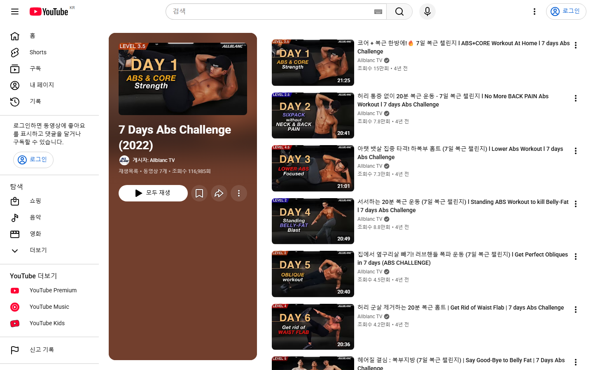

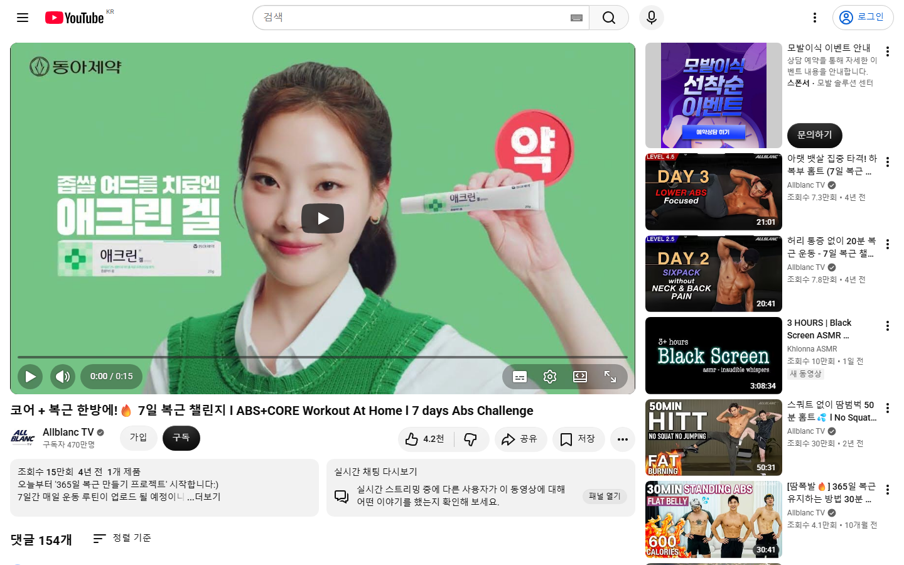
재생목록에서 오늘 영상을 다시 찾지 않고 바로 시작한다.
모든 완료 행동이 원본 YouTube 영상 조회와 채널 재방문으로 돌아간다.
반복 일정·완료 체크·다음 영상 재방문이 생기며 콘텐츠를 복제하지 않는다.
카드 약속7개 영상·7개 루틴·각 20~21분
첫 화면오늘 영상 제목·길이·재생 버튼만 표시
모바일영상 1개를 한 화면의 주 행동으로 표시하고 나머지는 다음 목록으로 둔다.
판정현재 구조에 매우 적합. 별도 통증·중단 필드 불필요
저장하면 가장 먼저 보이는 내용영상 따라 하기
- 코어 + 복근 한방에! 20분 복근 운동
실제 적용 데이터
Flow 콘텐츠 전체
Flow 1Day 1 · 코어 + 복근 한방에! 20분 복근 운동1 Step · 1 Item
영상 따라 하기
1코어 + 복근 한방에! 20분 복근 운동
영상: https://www.youtube.com/watch?v=XwUKn-52ykk · 길이: 21:25 · 운동 후 남길 내용이 있으면 이 Item의 개인 메모를 사용한다.
원문 근거 1개
- 코어 + 복근 한방에! 20분 복근 운동7 Days Abs Challenge · Day 1
Flow 2Day 2 · 허리 통증 없이 20분 복근 운동1 Step · 1 Item
영상 따라 하기
1허리 통증 없이 20분 복근 운동
영상: https://www.youtube.com/watch?v=KzH8TcfyKFA · 길이: 20:41 · 운동 후 남길 내용이 있으면 이 Item의 개인 메모를 사용한다.
원문 근거 1개
- 허리 통증 없이 20분 복근 운동7 Days Abs Challenge · Day 2
Flow 3Day 3 · 아랫 뱃살 집중 타격 20분 운동1 Step · 1 Item
영상 따라 하기
1아랫 뱃살 집중 타격 20분 운동
영상: https://www.youtube.com/watch?v=Ft5gNO-2Je4 · 길이: 21:01 · 운동 후 남길 내용이 있으면 이 Item의 개인 메모를 사용한다.
원문 근거 1개
- 아랫 뱃살 집중 타격 20분 운동7 Days Abs Challenge · Day 3
Flow 4Day 4 · 서서하는 20분 복근 운동1 Step · 1 Item
영상 따라 하기
1서서하는 20분 복근 운동
영상: https://www.youtube.com/watch?v=8RzHWcq6eq0 · 길이: 20:49 · 운동 후 남길 내용이 있으면 이 Item의 개인 메모를 사용한다.
원문 근거 1개
- 서서하는 20분 복근 운동7 Days Abs Challenge · Day 4
Flow 5Day 5 · 집에서 옆구리살 빼기 20분 운동1 Step · 1 Item
영상 따라 하기
1집에서 옆구리살 빼기 20분 운동
영상: https://www.youtube.com/watch?v=peQuipmDIuc · 길이: 20:40 · 운동 후 남길 내용이 있으면 이 Item의 개인 메모를 사용한다.
원문 근거 1개
- 집에서 옆구리살 빼기 20분 운동7 Days Abs Challenge · Day 5
Flow 6Day 6 · 허리 군살 제거 20분 복근 홈트1 Step · 1 Item
영상 따라 하기
1허리 군살 제거 20분 복근 홈트
영상: https://www.youtube.com/watch?v=K3yO9oHgaIs · 길이: 20:36 · 운동 후 남길 내용이 있으면 이 Item의 개인 메모를 사용한다.
원문 근거 1개
- 허리 군살 제거 20분 복근 홈트7 Days Abs Challenge · Day 6
Flow 7Day 7 · 헤어질 결심: 복부지방 20분 운동1 Step · 1 Item
영상 따라 하기
1헤어질 결심: 복부지방 20분 운동
영상: https://www.youtube.com/watch?v=W2fS4TqeWCc · 길이: 20:49 · 운동 후 남길 내용이 있으면 이 Item의 개인 메모를 사용한다.
원문 근거 1개
- 헤어질 결심: 복부지방 20분 운동7 Days Abs Challenge · Day 7
원문 행 ↔ Item 대응 전체 7개
- 코어 + 복근 한방에! 20분 복근 운동Day 1 · 코어 + 복근 한방에! 20분 복근 운동 · 영상 따라 하기
- 허리 통증 없이 20분 복근 운동Day 2 · 허리 통증 없이 20분 복근 운동 · 영상 따라 하기
- 아랫 뱃살 집중 타격 20분 운동Day 3 · 아랫 뱃살 집중 타격 20분 운동 · 영상 따라 하기
- 서서하는 20분 복근 운동Day 4 · 서서하는 20분 복근 운동 · 영상 따라 하기
- 집에서 옆구리살 빼기 20분 운동Day 5 · 집에서 옆구리살 빼기 20분 운동 · 영상 따라 하기
- 허리 군살 제거 20분 복근 홈트Day 6 · 허리 군살 제거 20분 복근 홈트 · 영상 따라 하기
- 헤어질 결심: 복부지방 20분 운동Day 7 · 헤어질 결심: 복부지방 20분 운동 · 영상 따라 하기
수요7개 영상 합산 조회 약 539,000첫 영상 조회 150,000
소통첫 영상 댓글 154개재생목록과 채널에 후속 루틴이 계속 축적됨
복사 의도7 Days Abs Challenge라는 명시적 기간·순서 구조
비즈니스채널 구독·후속 영상·브랜드 노출로 돌아가는 제작자 유입 경로
점수와 감점 이유 · 96/100
7개 합산 약 53.9만 조회, 개별 최고 15만 조회가 보인다.
첫 영상 댓글 154개와 후속 재생목록이 있다. 전체 7개 댓글 합산은 확인하지 않아 2점 감점했다.
7일 챌린지와 Day 순서가 사용자의 반복 실행 의도를 직접 만든다.
Flow에서 영상 재생과 채널 재방문이 계속 발생한다. 별도 상품 연결은 확인하지 않아 2점 감점했다.
영상 1개=Flow 1개, 재생목록=Map으로 변환하면 추가 행동을 만들 필요가 없다.
짧은 영상 루틴과 creator 반복 소비 영역을 채운다.
Go집·살림
신박한 수납 팁 5
수납 팁 5개 중 필요한 하나만 골라 독립 프로젝트로 저장한다.
핵심 수요조회 684,233·좋아요 12,986·스크랩 53,119
소통 증거댓글 398
전체 구조5 Flow · 5 Step · 5 Item
최초 입력필수 1개(팁 선택), 날짜는 선택
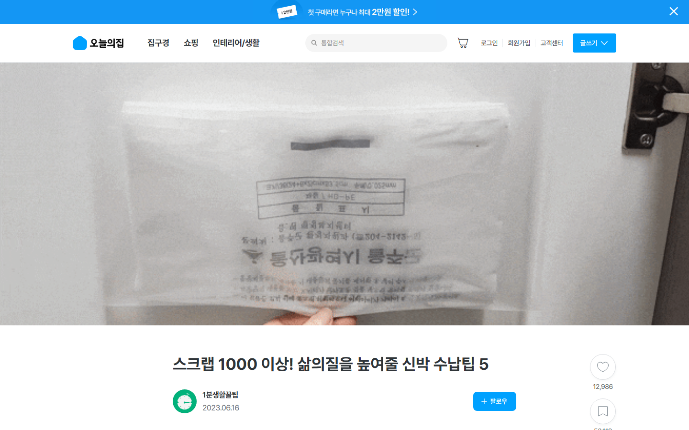
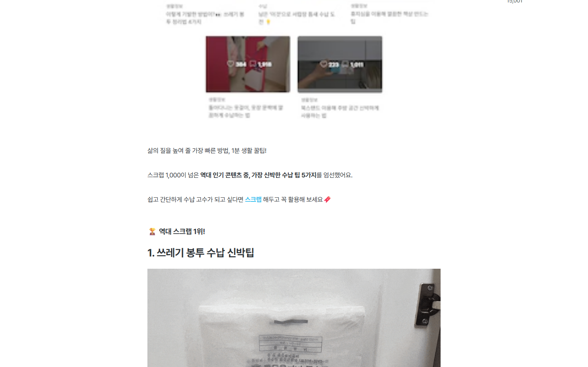
필요한 팁만 골라 준비와 실행을 한 번에 끝낸다.
각 실행에서 원문 사진과 제작자 팔로우로 돌아간다.
작은 생활 프로젝트의 저장·완료·파생 버전 공유가 생긴다.
카드 약속독립 Quick Flow 5개
첫 화면5개 결과 사진과 제목을 먼저 비교
모바일Map 카드에서는 5개 썸네일 목록, 저장 후에는 선택한 Flow 하나만 표시
판정현재 구조에 적합. 한 Flow에 5개를 모두 체크하게 만들면 부적합
저장하면 가장 먼저 보이는 내용만들기
- L파일로 쓰레기봉투 디스펜서 만들기
실제 적용 데이터
Flow 콘텐츠 전체
Flow 1L파일로 쓰레기봉투 디스펜서 만들기1 Step · 1 Item
만들기
1L파일로 쓰레기봉투 디스펜서 만들기
L파일 한쪽을 밀봉하고 꺼내는 구멍을 자른 뒤, 뒷면에 테이프를 붙여 수납장 안쪽에 고정하고 접은 봉투를 넣는다.
원문 근거 1개
- L파일로 쓰레기봉투 디스펜서 만들기원문 수납 팁 1
Flow 2몰딩으로 떠 있는 틈새 수납 만들기1 Step · 1 Item
만들기
1몰딩으로 떠 있는 틈새 수납 만들기
전선 몰딩을 필요한 길이로 자르고 폼 양면테이프를 붙인다. 종이 간격자 두 개로 위치를 맞춰 부착한 뒤 24시간 기다리고 컵이나 작은 물건을 올린다.
원문 근거 1개
- 몰딩으로 떠 있는 틈새 수납 만들기원문 수납 팁 2
Flow 3휴지심과 컵으로 책상 정리함 만들기1 Step · 1 Item
만들기
1휴지심과 컵으로 책상 정리함 만들기
휴지심을 컵 높이보다 낮게 자르고 2~3개를 컵 안에 빽빽하게 넣어 펜·도구 칸을 나눈다.
원문 근거 1개
- 휴지심과 컵으로 책상 정리함 만들기원문 수납 팁 3
Flow 4파일꽂이 또는 상자로 옷걸이 수납 만들기1 Step · 1 Item
만들기
1파일꽂이 또는 상자로 옷걸이 수납 만들기
방법 A는 파일꽂이에 옷걸이를 세워 넣는다. 방법 B는 단단한 상자를 파일꽂이 모양으로 잘라 옷걸이를 넣고 옷장 문 안쪽에 테이프로 고정한다.
원문 근거 1개
- 파일꽂이 또는 상자로 옷걸이 수납 만들기원문 수납 팁 4
Flow 5북엔드로 상부장 자석 수납 만들기1 Step · 1 Item
만들기
1북엔드로 상부장 자석 수납 만들기
약 11cm의 낮은 북엔드를 상부장 선반에 걸고 테이프로 고정한 뒤 자석 고리나 틴 케이스를 붙인다.
원문 근거 1개
- 북엔드로 상부장 자석 수납 만들기원문 수납 팁 5
원문 행 ↔ Item 대응 전체 5개
- L파일로 쓰레기봉투 디스펜서 만들기L파일로 쓰레기봉투 디스펜서 만들기 · 만들기
- 몰딩으로 떠 있는 틈새 수납 만들기몰딩으로 떠 있는 틈새 수납 만들기 · 만들기
- 휴지심과 컵으로 책상 정리함 만들기휴지심과 컵으로 책상 정리함 만들기 · 만들기
- 파일꽂이 또는 상자로 옷걸이 수납 만들기파일꽂이 또는 상자로 옷걸이 수납 만들기 · 만들기
- 북엔드로 상부장 자석 수납 만들기북엔드로 상부장 자석 수납 만들기 · 만들기
수요조회 684,233·좋아요 12,986·스크랩 53,119
소통댓글 398스크랩 기반 후속 사용과 플랫폼 공유가 직접 보임
복사 의도서로 독립적인 5개 미니 프로젝트와 단계 사진
비즈니스제작자 팔로우와 오늘의집 쇼핑·콘텐츠 생태계로 회귀
점수와 감점 이유 · 97/100
조회·좋아요·스크랩 세 수치가 모두 매우 높다.
댓글 398과 스크랩 53,119가 사용·저장 반응을 함께 보여준다.
각 팁이 준비물과 순서를 가진 독립 미니 프로젝트다.
제작자 팔로우와 플랫폼 쇼핑 경로가 있다. 개별 상품 귀속은 약해 2점 감점했다.
5개를 하나의 긴 체크리스트가 아니라 독립 Quick Flow Map으로 만들 수 있다.
집·살림 영역을 강화하지만 이사와 같은 생활 영역이어서 1점 감점했다.
Go식사·장보기
평일 5일 도시락 식단
월요일부터 금요일까지 도시락 메뉴와 확인된 레시피가 한 주에 배치된다.
핵심 수요조회 10,943·좋아요 226·스크랩 451
소통 증거댓글 27
전체 구조1 Flow · 5 Step · 5 Item
최초 입력날짜 없이 저장 0개, 일정화할 때 시작 주 1개
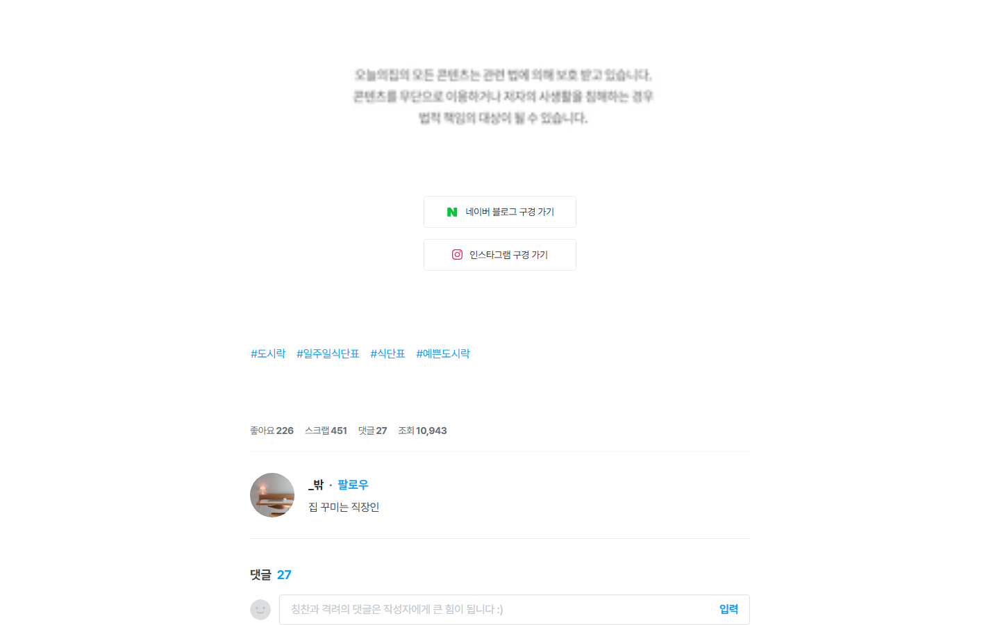
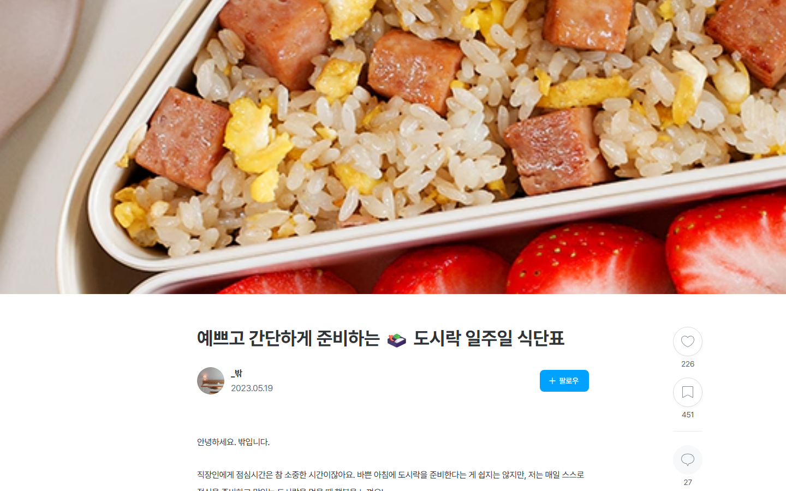
식단표와 레시피를 별도로 옮겨 적지 않고 평일 메뉴를 바로 확인한다.
레시피 사진·후속 식단·팔로우로 사용자를 돌려보낸다.
주간 반복과 메뉴 완료, 다음 주 fork가 자연스럽다.
카드 약속평일 5개 메뉴·하루 한 개 식사 행동
첫 화면오늘 메뉴와 재료·방법만 표시
모바일요일 탭 또는 오늘 카드 하나를 우선 표시
판정현재 구조에 적합. 수·목요일의 누락 레시피는 보강하지 않고 원문 범위만 표시
저장하면 가장 먼저 보이는 내용월요일
- 스팸 볶음밥과 딸기 도시락
실제 적용 데이터
Flow 콘텐츠 전체
Flow 1월~금 도시락 식단5 Step · 5 Item
월요일
1스팸 볶음밥과 딸기 도시락
재료: 밥 1/2공기, 스팸 1/2캔, 달걀 1개, 대파, 굴소스 1T, 후추. 대파·스팸·계란물을 준비하고 파기름에 스팸을 2분 볶는다. 빈 공간에 스크램블 에그를 만든 뒤 불을 끄고 밥을 섞고, 굴소스와 후추로 마무리한다. 다른 칸에는 딸기를 담는다.
원문 근거 1개
- 스팸 볶음밥과 딸기 도시락원문 월요일 식단
화요일
1게살 계란 덮밥과 골드키위 도시락
재료: 밥 1/2공기, 양파 1/2개, 굴소스 1.5T, 달걀 2개, 크래미 2줄, 소금·후추. 크래미 볶음, 스크램블 에그, 굴소스 양파볶음을 만든 뒤 밥 위에 양파·계란·크래미 순으로 올리고 골드키위를 담는다.
원문 근거 1개
- 게살 계란 덮밥과 골드키위 도시락원문 화요일 식단
수요일
1김치볶음밥·두부봉 부침·깍두기 도시락
원문은 김치볶음밥과 깍두기, 두부봉을 썰어 계란물을 입혀 굽고 남은 계란물은 얇은 지단으로 담는 방법까지만 제시한다.
원문 근거 1개
- 김치볶음밥·두부봉 부침·깍두기 도시락원문 수요일 식단
목요일
1짜장 잡채밥과 깍두기 도시락
원문은 맵지 않은 잡채볶음밥 반과 짜장 반을 담고, 단무지 대신 깍두기를 곁들이는 구성까지만 제시한다.
원문 근거 1개
- 짜장 잡채밥과 깍두기 도시락원문 목요일 식단
금요일
1만두 마요 덮밥 도시락
재료: 밥 1공기, 달걀 2개, 냉동만두 2개, 식용유·소금·마요네즈. 달걀지단 2장을 부쳐 채 썰고, 만두는 에어프라이어 180도에서 앞뒤 5분씩 굽는다. 밥·지단·만두 순으로 담고 마요네즈를 뿌린다.
원문 근거 1개
- 만두 마요 덮밥 도시락원문 금요일 식단
원문 행 ↔ Item 대응 전체 5개
- 스팸 볶음밥과 딸기 도시락월~금 도시락 식단 · 월요일
- 게살 계란 덮밥과 골드키위 도시락월~금 도시락 식단 · 화요일
- 김치볶음밥·두부봉 부침·깍두기 도시락월~금 도시락 식단 · 수요일
- 짜장 잡채밥과 깍두기 도시락월~금 도시락 식단 · 목요일
- 만두 마요 덮밥 도시락월~금 도시락 식단 · 금요일
수요조회 10,943·좋아요 226·스크랩 451
소통댓글 27제작자 팔로우와 댓글 입력 경로
복사 의도월~금 식단표와 일부 상세 레시피
비즈니스재료·도구·후속 식단 콘텐츠로 연결 가능한 플랫폼 경로
점수와 감점 이유 · 86/100
조회 10,943와 스크랩 451이 보이지만 대표군 내 절대 규모는 중간이다.
댓글 27이 확인된다. 제작자 답변 비율은 확인하지 못해 4점 감점했다.
요일별 식단표를 그대로 옮겨 쓰는 목적이 명확하다.
팔로우·쇼핑 연결은 있으나 글 자체의 직접 상품 연결은 약하다.
요일 행 하나를 식사 Item 하나로 두고 레시피를 memo로 보내면 자연스럽다.
식사·장보기 영역의 평일 반복 콘텐츠를 새로 채운다.
Go돈·행정·구매
리모델링 계약서 체크 10
계약서 작성 전에 놓치기 쉬운 10개 조항을 한 번에 확인한다.
핵심 수요조회 253,495·좋아요 2,427·스크랩 8,029·공유 13,704
소통 증거댓글 124
전체 구조1 Flow · 1 Step · 10 Item
최초 입력0개
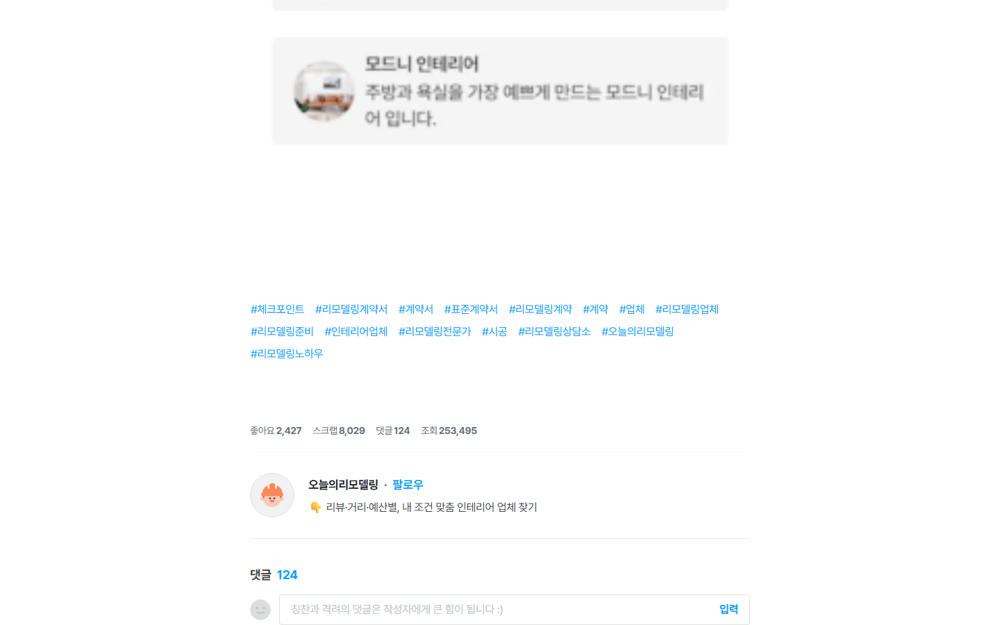
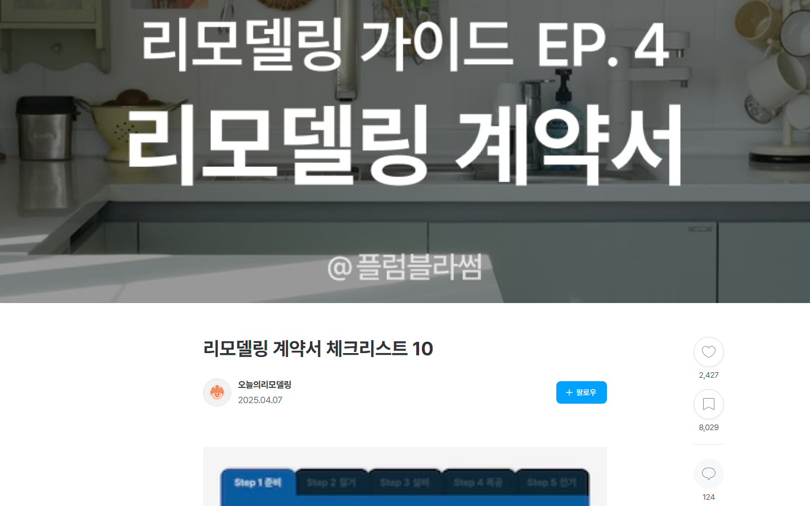
고액 계약에서 빠뜨리기 쉬운 조항을 줄인다.
표준계약서·상담·리모델링 서비스로 사용자를 되돌린다.
비교·계약 전 체크와 메모, 업체별 fork가 생긴다.
카드 약속계약 전 체크 10개·표준계약서 링크
첫 화면10개 중 미확인 항목과 원문 링크를 먼저 표시
모바일한 항목씩 읽고 체크할 수 있는 세로 목록
판정현재 구조에 적합. 법률 판단이나 자동 추천은 범위 밖
저장하면 가장 먼저 보이는 내용계약서 작성 전
- 계약 상대방의 업체 정보 확인하기
- 공사 시작일과 완료일 적기
- 공사 지연 배상 조건 적기
외 7개 · 전체 내용은 아래에서 확인
실제 적용 데이터
Flow 콘텐츠 전체
Flow 1계약서 10개 조항 확인1 Step · 10 Item
계약서 작성 전
10계약 상대방의 업체 정보 확인하기
사업자명·대표자·주소·연락처 등 계약 주체가 실제 시공업체와 같은지 확인한다. · 최신 표준계약서 양식은 원문 링크에서 다시 확인한다.
원문 근거 1개
- 계약 상대방의 업체 정보 확인하기원문 체크리스트 1
공사 시작일과 완료일 적기
공사 시작일과 완료 예정일을 계약서에 명확히 적는다. · 최신 표준계약서 양식은 원문 링크에서 다시 확인한다.
원문 근거 1개
- 공사 시작일과 완료일 적기원문 체크리스트 2
공사 지연 배상 조건 적기
완료일이 늦어질 때 적용할 지체상금 또는 손해배상 기준을 계약서에서 확인한다. · 최신 표준계약서 양식은 원문 링크에서 다시 확인한다.
원문 근거 1개
- 공사 지연 배상 조건 적기원문 체크리스트 3
계약금·중도금·잔금 조건 적기
각 지급 금액, 지급 시점, 지급 조건을 구분해 적는다. · 최신 표준계약서 양식은 원문 링크에서 다시 확인한다.
원문 근거 1개
- 계약금·중도금·잔금 조건 적기원문 체크리스트 4
최종 공사금액과 추가비용 책임 적기
총 공사금액과 변경·추가 공사비가 생길 때 부담 주체와 승인 방식을 적는다. · 최신 표준계약서 양식은 원문 링크에서 다시 확인한다.
원문 근거 1개
- 최종 공사금액과 추가비용 책임 적기원문 체크리스트 5
세금계산서 발행 기한 적기
세금계산서 발행 여부와 발행 기한을 계약서에서 확인한다. · 최신 표준계약서 양식은 원문 링크에서 다시 확인한다.
원문 근거 1개
- 세금계산서 발행 기한 적기원문 체크리스트 6
자재와 사양을 별지로 붙이기
자재 브랜드·제품명·색상·수량 등 공정표나 내역서를 계약서 별지로 연결한다. · 최신 표준계약서 양식은 원문 링크에서 다시 확인한다.
원문 근거 1개
- 자재와 사양을 별지로 붙이기원문 체크리스트 7
공사 변경 승인 방식을 적기
설계·자재·금액 변경은 사전 합의와 기록 후 진행한다는 조건을 적는다. · 최신 표준계약서 양식은 원문 링크에서 다시 확인한다.
원문 근거 1개
- 공사 변경 승인 방식을 적기원문 체크리스트 8
공정별 A/S 기간 적기
공정별 하자보수 범위와 기간, 접수 방법을 계약서에서 확인한다. · 최신 표준계약서 양식은 원문 링크에서 다시 확인한다.
원문 근거 1개
- 공정별 A/S 기간 적기원문 체크리스트 9
해지와 위약금 조건 적기
계약 해지 가능 사유, 통지 방법, 위약금과 정산 기준을 확인한다. · 최신 표준계약서 양식은 원문 링크에서 다시 확인한다.
원문 근거 1개
- 해지와 위약금 조건 적기원문 체크리스트 10
원문 행 ↔ Item 대응 전체 10개
- 계약 상대방의 업체 정보 확인하기계약서 10개 조항 확인 · 계약서 작성 전
- 공사 시작일과 완료일 적기계약서 10개 조항 확인 · 계약서 작성 전
- 공사 지연 배상 조건 적기계약서 10개 조항 확인 · 계약서 작성 전
- 계약금·중도금·잔금 조건 적기계약서 10개 조항 확인 · 계약서 작성 전
- 최종 공사금액과 추가비용 책임 적기계약서 10개 조항 확인 · 계약서 작성 전
- 세금계산서 발행 기한 적기계약서 10개 조항 확인 · 계약서 작성 전
- 자재와 사양을 별지로 붙이기계약서 10개 조항 확인 · 계약서 작성 전
- 공사 변경 승인 방식을 적기계약서 10개 조항 확인 · 계약서 작성 전
- 공정별 A/S 기간 적기계약서 10개 조항 확인 · 계약서 작성 전
- 해지와 위약금 조건 적기계약서 10개 조항 확인 · 계약서 작성 전
수요조회 253,495·좋아요 2,427·스크랩 8,029·공유 13,704
소통댓글 124표준계약서 양식과 상담 경로
복사 의도계약 전 확인할 10개 번호 행과 표준계약서 링크
비즈니스리모델링 상담·업체·시공 서비스로 직접 연결
점수와 감점 이유 · 99/100
조회 25만, 스크랩 8천, 공유 1.37만이 직접 확인된다.
댓글 124와 양식·상담 경로가 있다. 제작자 답변률은 확인하지 않아 1점 감점했다.
계약서에 옮겨 확인할 10개 행과 양식 링크가 있다.
체크 직후 리모델링 상담과 업체 연결로 이어진다.
원문 번호 10개를 그대로 체크 Item으로 두면 된다.
고액 계약·비교·결정 영역을 대표한다.
Go공부·학습
OSSU Computer Science 시작 구간
OSSU 전체를 한꺼번에 넣지 않고 Intro CS와 Core programming 6개 과정의 순서·기간·선수조건만 관리한다.
핵심 수요GitHub star 207k·fork 25.7k
소통 증거열린 issue 16·PR 7·Discord 커뮤니티
전체 구조2 Flow · 6 Step · 6 Item
최초 입력날짜 없이 저장 0개, 시작 구간·날짜는 선택

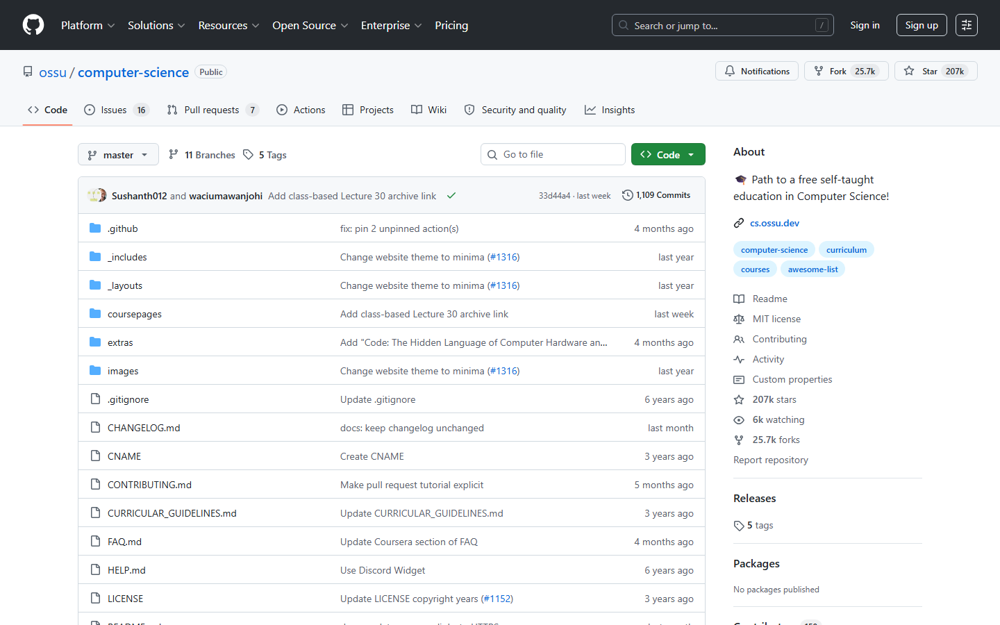
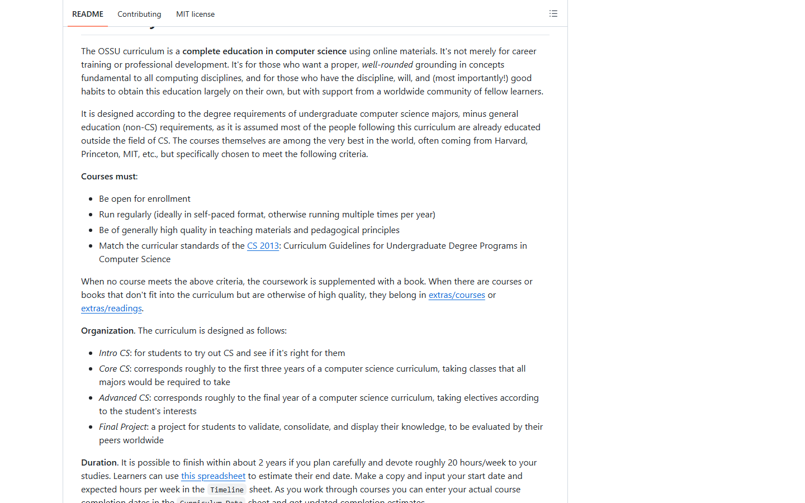
README를 반복 탐색하지 않고 다음 과정과 선수조건을 관리한다.
각 과정과 GitHub 원문, issue·Discord로 사용자를 돌려보낸다.
장기 진도·중단 위치·fork·공유가 생긴다.
카드 약속시작 구간 2개·과정 6개·기간·선수조건
첫 화면다음 수강 과정과 선수조건을 우선 표시
모바일과정명·기간·선수조건을 한 행 카드로 표시하고 세부 링크는 펼침
판정현재 구조에 적합. 전체 OSSU를 한 번에 펼치면 과밀하므로 시작 구간만 포함
저장하면 가장 먼저 보이는 내용1. Introduction to Computer Science and Programming using Python
- Introduction to Computer Science and Programming using Python 수강
실제 적용 데이터
Flow 콘텐츠 전체
Flow 1Intro CS1 Step · 1 Item
1. Introduction to Computer Science and Programming using Python
1Introduction to Computer Science and Programming using Python 수강
예상 기간 14주 · 주 6~10시간 · 선수조건: 고등학교 대수 · 과정 링크와 개인 진도는 같은 Item에서 관리한다.
원문 근거 1개
- Introduction to Computer Science and Programming using PythonCurriculum 표 · Intro CS
Flow 2Core programming5 Step · 5 Item
1. Systematic Program Design
1Systematic Program Design 수강
예상 기간 13주 · 주 8~10시간 · 선수조건: 없음 · 과정 링크와 개인 진도는 같은 Item에서 관리한다.
원문 근거 1개
- Systematic Program DesignCurriculum 표 · Core programming
2. Class-based Program Design
1Class-based Program Design 수강
예상 기간 13주 · 주 5~10시간 · 선수조건: Systematic Program Design·고등학교 수학 · 과정 링크와 개인 진도는 같은 Item에서 관리한다.
원문 근거 1개
- Class-based Program DesignCurriculum 표 · Core programming
3. Programming Languages
1Programming Languages 수강
예상 기간 11주 · 주 4~8시간 · 선수조건: Systematic Program Design · 과정 링크와 개인 진도는 같은 Item에서 관리한다.
원문 근거 1개
- Programming LanguagesCurriculum 표 · Core programming
4. Object-Oriented Design
1Object-Oriented Design 수강
예상 기간 13주 · 주 5~10시간 · 선수조건: Class-based Program Design · 과정 링크와 개인 진도는 같은 Item에서 관리한다.
원문 근거 1개
- Object-Oriented DesignCurriculum 표 · Core programming
5. Software Architecture
1Software Architecture 수강
예상 기간 4주 · 주 2~5시간 · 선수조건: Object-Oriented Design · 과정 링크와 개인 진도는 같은 Item에서 관리한다.
원문 근거 1개
- Software ArchitectureCurriculum 표 · Core programming
원문 행 ↔ Item 대응 전체 6개
- Introduction to Computer Science and Programming using Python 수강Intro CS · 1. Introduction to Computer Science and Programming using Python
- Systematic Program Design 수강Core programming · 1. Systematic Program Design
- Class-based Program Design 수강Core programming · 2. Class-based Program Design
- Programming Languages 수강Core programming · 3. Programming Languages
- Object-Oriented Design 수강Core programming · 4. Object-Oriented Design
- Software Architecture 수강Core programming · 5. Software Architecture
수요GitHub star 207k·fork 25.7k
소통열린 issue 16·PR 7·Discord 커뮤니티1,109 commits로 업데이트 흔적 확인
복사 의도과정명·기간·주당 시간·선수조건이 있는 커리큘럼 표
비즈니스오픈 커뮤니티 fork·issue·contribution으로 개선과 공유가 순환
점수와 감점 이유 · 99/100
207k stars와 25.7k forks가 강한 재사용 수요를 보여준다.
issue·PR·Discord·1,109 commits가 실제 커뮤니티 수정 루프를 보여준다.
과정 표를 자신의 진도표로 옮겨 쓰는 목적이 명확하다.
fork·issue·Discord로 원문 개선과 유입이 지속된다.
과정 행과 선수조건을 그대로 Step으로 보존할 수 있다.
장기 학습 진도 패턴을 채우지만 OPIC과 학습 영역이 겹쳐 1점 감점했다.
Modify 비교군
구조는 우수하지만 수요·소통 hard gate를 보강해야 하는 사례
Modify돈·행정·구매
신차 구매 8단계
예산 결정부터 출고 후 관리까지 신차 구매의 8단계를 순서대로 확인한다.
핵심 수요2026-01-01 업데이트
소통 증거견적 요청 CTA
전체 구조1 Flow · 8 Step · 14 Item
최초 입력0개, 차량 후보명은 선택
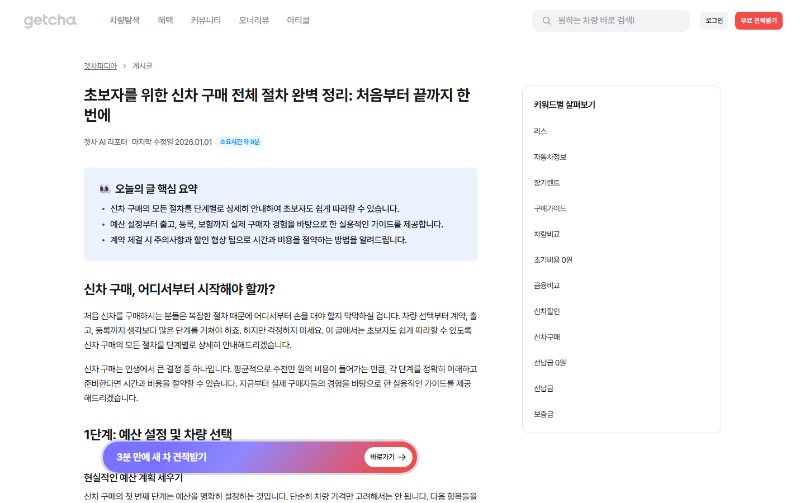


견적·계약·출고·등록에서 빠뜨릴 항목을 줄인다.
차량 견적과 상담 경로로 연결된다.
고관여 비교·결정·구매 진행 상태가 생긴다.
카드 약속신차 구매 8단계·비용·서류·계약 체크
첫 화면현재 단계와 다음 결정 한 개를 표시
모바일단계별 접기와 비용·서류 memo 분리
판정구조는 적합하지만 공개 대표 승격 전 글 단위 수요·소통 증거 보강 필요
저장하면 가장 먼저 보이는 내용1. 예산과 차량 선택
- 총예산과 월 납입 가능액 정하기
- 차종·트림·옵션 후보 좁히기
실제 적용 데이터
Flow 콘텐츠 전체
Flow 1신차 구매 8단계8 Step · 14 Item
1. 예산과 차량 선택
2총예산과 월 납입 가능액 정하기
차량 가격 외 취등록세·보험·유지비를 포함한 총예산 확인 · 현금·할부 시 월 납입 가능액 확인
원문 근거 2개
- 차량 가격 외 취등록세·보험·유지비를 포함한 총예산 확인1. 예산과 차량 선택 · 차량 가격 외 취등록세·보험·유지비를 포함한 총예산 확인
- 현금·할부 시 월 납입 가능액 확인1. 예산과 차량 선택 · 현금·할부 시 월 납입 가능액 확인
차종·트림·옵션 후보 좁히기
용도와 탑승 인원에 맞는 차종 선택 · 트림과 필수 옵션 후보 정리
원문 근거 2개
- 용도와 탑승 인원에 맞는 차종 선택1. 예산과 차량 선택 · 용도와 탑승 인원에 맞는 차종 선택
- 트림과 필수 옵션 후보 정리1. 예산과 차량 선택 · 트림과 필수 옵션 후보 정리
2. 구매 방식 선택
1현금·할부·리스·장기렌트 비교하기
소유권·월 납입액·세금·만기 조건 비교 · 본인 상황에 맞는 구매 방식 선택
원문 근거 2개
- 소유권·월 납입액·세금·만기 조건 비교2. 구매 방식 선택 · 소유권·월 납입액·세금·만기 조건 비교
- 본인 상황에 맞는 구매 방식 선택2. 구매 방식 선택 · 본인 상황에 맞는 구매 방식 선택
3. 견적과 할인 협상
2여러 판매처 견적 비교하기
동일 트림·옵션 기준으로 견적 받기 · 차량 가격·탁송료·등록비·서비스 품목 비교
원문 근거 2개
- 동일 트림·옵션 기준으로 견적 받기3. 견적과 할인 협상 · 동일 트림·옵션 기준으로 견적 받기
- 차량 가격·탁송료·등록비·서비스 품목 비교3. 견적과 할인 협상 · 차량 가격·탁송료·등록비·서비스 품목 비교
할인과 서비스 조건 확정하기
제조사 할인과 딜러 할인 확인 · 현금 지원·용품 등 서비스 조건 기록
원문 근거 2개
- 제조사 할인과 딜러 할인 확인3. 견적과 할인 협상 · 제조사 할인과 딜러 할인 확인
- 현금 지원·용품 등 서비스 조건 기록3. 견적과 할인 협상 · 현금 지원·용품 등 서비스 조건 기록
4. 계약
2계약서 차량 사양과 금액 확인하기
차종·트림·색상·옵션 확인 · 총액과 계약금 확인 · 출고 예정일과 취소·환불 조건 확인
원문 근거 3개
- 차종·트림·색상·옵션 확인4. 계약 · 차종·트림·색상·옵션 확인
- 총액과 계약금 확인4. 계약 · 총액과 계약금 확인
- 출고 예정일과 취소·환불 조건 확인4. 계약 · 출고 예정일과 취소·환불 조건 확인
계약금 납부하고 서류 보관하기
계약금 납부 · 계약서와 영수증 보관
원문 근거 2개
- 계약금 납부4. 계약 · 계약금 납부
- 계약서와 영수증 보관4. 계약 · 계약서와 영수증 보관
5. 출고와 검수
2차대번호와 출고 정보 확인하기
차대번호·생산연월·출고 일정 확인
원문 근거 1개
- 차대번호·생산연월·출고 일정 확인5. 출고와 검수 · 차대번호·생산연월·출고 일정 확인
외관·내장·기능 검수하기
도장·유리·타이어·휠 외관 확인 · 시트·내장재 확인 · 등화·전자장비·옵션 작동 확인
원문 근거 3개
- 도장·유리·타이어·휠 외관 확인5. 출고와 검수 · 도장·유리·타이어·휠 외관 확인
- 시트·내장재 확인5. 출고와 검수 · 시트·내장재 확인
- 등화·전자장비·옵션 작동 확인5. 출고와 검수 · 등화·전자장비·옵션 작동 확인
6. 등록
2등록 서류와 비용 확인하기
신분증·계약서·보험가입증명 등 필요 서류 확인 · 취득세·공채·번호판 등 등록 비용 확인
원문 근거 2개
- 신분증·계약서·보험가입증명 등 필요 서류 확인6. 등록 · 신분증·계약서·보험가입증명 등 필요 서류 확인
- 취득세·공채·번호판 등 등록 비용 확인6. 등록 · 취득세·공채·번호판 등 등록 비용 확인
차량 등록과 번호판 발급 마치기
직접 등록 또는 등록 대행 선택 · 자동차등록증과 번호판 수령
원문 근거 2개
- 직접 등록 또는 등록 대행 선택6. 등록 · 직접 등록 또는 등록 대행 선택
- 자동차등록증과 번호판 수령6. 등록 · 자동차등록증과 번호판 수령
7. 보험
1자동차보험 조건 비교하고 가입하기
운전자 범위·보장 한도·자기부담금 비교 · 차량 인수 전에 보험 효력 시작 확인
원문 근거 2개
- 운전자 범위·보장 한도·자기부담금 비교7. 보험 · 운전자 범위·보장 한도·자기부담금 비교
- 차량 인수 전에 보험 효력 시작 확인7. 보험 · 차량 인수 전에 보험 효력 시작 확인
8. 출고 후 관리
2차량 문서와 보증 조건 보관하기
등록증·보험증권·보증서 보관 · 보증 기간과 정기점검 조건 확인
원문 근거 2개
- 등록증·보험증권·보증서 보관8. 출고 후 관리 · 등록증·보험증권·보증서 보관
- 보증 기간과 정기점검 조건 확인8. 출고 후 관리 · 보증 기간과 정기점검 조건 확인
초기 점검과 소모품 일정 확인하기
제조사 초기 점검 안내 확인 · 소모품 교환 주기 확인
원문 근거 2개
- 제조사 초기 점검 안내 확인8. 출고 후 관리 · 제조사 초기 점검 안내 확인
- 소모품 교환 주기 확인8. 출고 후 관리 · 소모품 교환 주기 확인
원문 행 ↔ Item 대응 전체 14개
- 총예산과 월 납입 가능액 정하기신차 구매 8단계 · 1. 예산과 차량 선택
- 차종·트림·옵션 후보 좁히기신차 구매 8단계 · 1. 예산과 차량 선택
- 현금·할부·리스·장기렌트 비교하기신차 구매 8단계 · 2. 구매 방식 선택
- 여러 판매처 견적 비교하기신차 구매 8단계 · 3. 견적과 할인 협상
- 할인과 서비스 조건 확정하기신차 구매 8단계 · 3. 견적과 할인 협상
- 계약서 차량 사양과 금액 확인하기신차 구매 8단계 · 4. 계약
- 계약금 납부하고 서류 보관하기신차 구매 8단계 · 4. 계약
- 차대번호와 출고 정보 확인하기신차 구매 8단계 · 5. 출고와 검수
- 외관·내장·기능 검수하기신차 구매 8단계 · 5. 출고와 검수
- 등록 서류와 비용 확인하기신차 구매 8단계 · 6. 등록
- 차량 등록과 번호판 발급 마치기신차 구매 8단계 · 6. 등록
- 자동차보험 조건 비교하고 가입하기신차 구매 8단계 · 7. 보험
- 차량 문서와 보증 조건 보관하기신차 구매 8단계 · 8. 출고 후 관리
- 초기 점검과 소모품 일정 확인하기신차 구매 8단계 · 8. 출고 후 관리
수요2026-01-01 업데이트
소통견적 요청 CTA
복사 의도원문 행은 좋지만 글 단위 조회·댓글 수가 보이지 않음
비즈니스원문 행은 좋지만 글 단위 조회·댓글 수가 보이지 않음
점수와 감점 이유 · 78/100
2026-01-01 업데이트. 다만 대표 후보 대비 근거 범위가 좁아 감점했다.
견적 요청 CTA. 제작자 답변률 또는 활동량을 모두 확인하지 못해 감점했다.
원문 행은 좋지만 글 단위 조회·댓글 수가 보이지 않음. 원문에서 바로 옮길 수 있는 범위만 점수에 반영했다.
원문 행은 좋지만 글 단위 조회·댓글 수가 보이지 않음. 확인되지 않은 판매·제휴 가능성은 점수에 넣지 않았다.
원문 행은 좋지만 글 단위 조회·댓글 수가 보이지 않음. 원문 행을 확보한 범위까지만 변환 가능성으로 평가했다.
money_admin_purchase 영역을 보강하지만 이번 대표군의 중복 제한도 함께 반영했다.
사용자가 골랐던 9개에서 배운 기준
좋았던 이유와 그대로 검색 모델로 쓰면 안 되는 경계를 함께 표시
펀맘 홈스쿨 자료
원문1,124개 글과 뚜렷한 과목 트리는 강하지만 사이트 전체에는 기간 순서가 없다. 실제 글 URL·대상 나이·학습 목표를 먼저 가져온 뒤 2주 자료 큐로 만들어야 한다.
검색 기준으로 남긴 규칙큰 자료실은 그 자체가 Flow가 아니다. article-level 행을 가져와 목표가 같은 자료만 기간형 큐로 묶는다.
오픽 모의고사 공부 방법
원문2주·1달 PDF/XLSX 계획표, 10회 모의고사 영상, 커뮤니티·상품 경로가 한 사용자 목표로 연결된다.
검색 기준으로 남긴 규칙계획표 셀과 영상 URL을 묶어 한 날짜의 행동 하나로 만들면 사용자가 다시 계획하지 않아도 된다.
초기 이유식 식단표
원문댓글 9,999+와 반복적인 파일 요청이 보이고, 비밀번호가 있는 실제 PDF에 D+174~209 식단 행이 있다.
검색 기준으로 남긴 규칙파일 확보 전에는 Hold, 확보 후에는 날짜 행 하나를 제공 행동 하나로 변환한다. 섭취량·상태는 memo다.
독서 기록과 목표
원문댓글 37개와 제작자의 실제 루틴은 있으나, 모든 사용자가 그대로 따를 공통 일정은 아니다.
검색 기준으로 남긴 규칙개인 경험을 보편 루틴으로 발명하지 않는다. 책 제목과 완료일을 사용자가 정하는 빈 루틴 템플릿은 별도 제작자 상품으로 다룬다.
신차 구매 절차
원문8단계와 세부 행은 매우 좋지만 글 단위 조회·댓글 등 사용자 소통 증거가 약하다. 변환 품질 비교군으로는 우수하다.
검색 기준으로 남긴 규칙구조가 완벽해도 수요·커뮤니케이션 hard gate를 대신하지 못한다.
영유아 예방접종 일정
원문공식 일정 신뢰도는 높지만 creator 커뮤니티 콘텐츠가 아니다. 최신 공식 사실을 보강하는 trust anchor 역할이 맞다.
검색 기준으로 남긴 규칙의료 일정은 공식 행만 쓰고, 이상반응 같은 별도 기록 필드를 늘리지 않는다. 필요한 내용은 개인 memo에 둔다.
이사 준비 체크리스트
원문조회 98,401, XLSX·PDF·Notion 배포, 견적 연결, D-30부터 당일까지의 실제 행이 함께 있다.
검색 기준으로 남긴 규칙D-day 원문은 기준일 하나로 일정화하되 서로 연관된 낮은 수준 체크는 한 Item으로 묶는다.
결혼 준비 타임라인
원문댓글 1,102개, Notion 요청, 14개 후속 글, D-12개월~D-1개월 타임라인이 확인된다.
검색 기준으로 남긴 규칙제작자 경험 중 선택 항목은 optional로 표시하고, 계약·예약·결정 행은 그대로 보존한다.
결혼 준비 A-to-Z 가이드
원문최신 A-to-Z 보조 원문으로 유용하지만 타임라인 대표 후보와 사용자 목표가 중복된다.
검색 기준으로 남긴 규칙같은 카테고리의 유사 원문은 한 Map의 버전 또는 trust/support source로 합치고 대표 자리를 중복 점유하지 않는다.
Allblanc 홈트 재생목록
원문재생목록이 기간형 Map이고 영상 하나가 자연스러운 루틴 하나다. 7일 복근 챌린지 7개 영상의 합산 조회는 약 53.9만이다.
검색 기준으로 남긴 규칙영상 제목·URL·순서만 실행 객체로 두고 통증·중단 같은 별도 필드를 만들지 않는다. 필요한 기록은 memo다.
부록 · 심층 검토 후보 26개와 점수 코멘트
대표오픽 2주·1달 모의고사 계획88/100
원문 열기
보이는 수요15/20 사용자 소통15/20 복사·실행 의도15/15 제작자·사업 가치19/20 Flow 변환 적합성20/20 포트폴리오 확장4/5
수요: 1회 모의고사 영상 조회 11,861·좋아요 56 · 제작자 YouTube 구독자 6.09천명
소통: 원문에서 Kakao 오픈채팅·Discord·YouTube·1:1 문의 경로를 함께 운영 · 모의고사 영상과 본문·PDF가 서로 연결됨
행 확보: verified
점수와 감점 이유 · 88/100
영상 조회 11,861, 좋아요 56, 채널 구독자 6.09천명이 보인다. 본문 자체 조회수는 공개되지 않아 5점 감점했다.
오픈채팅·Discord·YouTube·1:1 문의가 실제 연결되어 있다. 각 채널의 활동량은 공개 화면에서 수치 확인이 어려워 5점 감점했다.
사용자가 그대로 옮겨 쓰는 XLSX와 2주·1달 PDF를 모두 제공한다.
첨삭·상품·커뮤니티·영상으로 원문 회귀와 후속 상품 연결이 명확하다.
원문 행이 곧 실행 단위가 되고, 링크·설명은 memo로 보내면 현재 Flow/Step/Item 틀 안에서 과밀 없이 표현된다.
시험 공부의 기간형 진도 콘텐츠를 대표하지만 OSSU와 학습 영역이 겹쳐 1점 감점했다.
대표초기 이유식 D+174~209 식단97/100
원문 열기
보이는 수요20/20 사용자 소통20/20 복사·실행 의도15/15 제작자·사업 가치17/20 Flow 변환 적합성20/20 포트폴리오 확장5/5
수요: 댓글 9,999+ 표시 · 초기·중기·후기 관련 글에서도 대규모 파일 요청이 반복됨
소통: 파일과 비밀번호 요청 댓글에 제작자가 반복 응답 · 댓글에서 사용 시기와 재료 질문이 이어짐
행 확보: verified
점수와 감점 이유 · 97/100
댓글 9,999+와 여러 단계 식단표 글의 반복 수요가 직접 보인다.
파일·비밀번호 요청과 제작자 답변이 대량으로 확인된다.
PDF 식단표를 내려받아 매일 확인하는 행동이 원문 자체에서 검증된다.
후속 단계 콘텐츠로 재방문할 이유는 강하다. 직접 상품 연결은 확인되지 않아 3점 감점했다.
원문 행이 곧 실행 단위가 되고, 링크·설명은 memo로 보내면 현재 Flow/Step/Item 틀 안에서 과밀 없이 표현된다.
영아 식사라는 고빈도 가족 실행 영역을 단독으로 채운다.
대표D-30 이사 준비97/100
원문 열기
보이는 수요20/20 사용자 소통17/20 복사·실행 의도15/15 제작자·사업 가치20/20 Flow 변환 적합성20/20 포트폴리오 확장5/5
수요: 원문 조회 98,401·스크랩 20 · 비교 원문은 조회 138,823·스크랩 11,446·좋아요 1,959
소통: 비교 원문 댓글 26·공유 4,182 · 원문은 견적 상담과 후기 경로를 제공
행 확보: verified
점수와 감점 이유 · 97/100
두 원문 모두 9만~13만 조회를 넘고 스크랩 수치도 확인된다.
비교 원문 댓글 26과 공유 4,182, 원문의 상담 경로가 보인다. 원문 댓글 수의 직접 라벨은 불명확해 3점 감점했다.
XLSX·PDF·Notion을 모두 제공해 복사 의도가 매우 강하다.
체크리스트 사용 직후 이사·청소 견적으로 자연스럽게 연결된다.
원문 행이 곧 실행 단위가 되고, 링크·설명은 memo로 보내면 현재 Flow/Step/Item 틀 안에서 과밀 없이 표현된다.
고관여 D-day 생활 업무의 대표 콘텐츠다.
대표결혼 준비 D-12개월 타임라인99/100
원문 열기
보이는 수요20/20 사용자 소통20/20 복사·실행 의도15/15 제작자·사업 가치19/20 Flow 변환 적합성20/20 포트폴리오 확장5/5
수요: 댓글 1,102개 · 14개 후속 결혼 준비 글
소통: Notion 링크 요청과 제작자 응답 · 업체·일정·준비 항목 질문이 댓글에 반복됨
행 확보: verified
점수와 감점 이유 · 99/100
댓글 1,102개와 14개 후속 글이 직접 확인된다.
Notion 요청, 일정·업체 질문, 제작자 응답이 명확하다.
사용자가 타임라인을 복사해 자신의 결혼일에 적용하려는 의도가 직접 드러난다.
고관여 업체·예약 영역이라 후속 콘텐츠와 제휴 가치가 높다. 직접 판매 수치는 없어 1점 감점했다.
원문 행이 곧 실행 단위가 되고, 링크·설명은 memo로 보내면 현재 Flow/Step/Item 틀 안에서 과밀 없이 표현된다.
장기 행사 준비와 compare/decide 패턴을 함께 채운다.
대표Allblanc 7일 복근 챌린지96/100
원문 열기
보이는 수요20/20 사용자 소통18/20 복사·실행 의도15/15 제작자·사업 가치18/20 Flow 변환 적합성20/20 포트폴리오 확장5/5
수요: 7개 영상 합산 조회 약 539,000 · 첫 영상 조회 150,000
소통: 첫 영상 댓글 154개 · 재생목록과 채널에 후속 루틴이 계속 축적됨
행 확보: verified
점수와 감점 이유 · 96/100
7개 합산 약 53.9만 조회, 개별 최고 15만 조회가 보인다.
첫 영상 댓글 154개와 후속 재생목록이 있다. 전체 7개 댓글 합산은 확인하지 않아 2점 감점했다.
7일 챌린지와 Day 순서가 사용자의 반복 실행 의도를 직접 만든다.
Flow에서 영상 재생과 채널 재방문이 계속 발생한다. 별도 상품 연결은 확인하지 않아 2점 감점했다.
영상 1개=Flow 1개, 재생목록=Map으로 변환하면 추가 행동을 만들 필요가 없다.
짧은 영상 루틴과 creator 반복 소비 영역을 채운다.
대표신박한 수납 팁 597/100
원문 열기
보이는 수요20/20 사용자 소통20/20 복사·실행 의도15/15 제작자·사업 가치18/20 Flow 변환 적합성20/20 포트폴리오 확장4/5
수요: 조회 684,233·좋아요 12,986·스크랩 53,119
소통: 댓글 398 · 스크랩 기반 후속 사용과 플랫폼 공유가 직접 보임
행 확보: verified
점수와 감점 이유 · 97/100
조회·좋아요·스크랩 세 수치가 모두 매우 높다.
댓글 398과 스크랩 53,119가 사용·저장 반응을 함께 보여준다.
각 팁이 준비물과 순서를 가진 독립 미니 프로젝트다.
제작자 팔로우와 플랫폼 쇼핑 경로가 있다. 개별 상품 귀속은 약해 2점 감점했다.
5개를 하나의 긴 체크리스트가 아니라 독립 Quick Flow Map으로 만들 수 있다.
집·살림 영역을 강화하지만 이사와 같은 생활 영역이어서 1점 감점했다.
대표평일 5일 도시락 식단86/100
원문 열기
보이는 수요15/20 사용자 소통16/20 복사·실행 의도15/15 제작자·사업 가치15/20 Flow 변환 적합성20/20 포트폴리오 확장5/5
수요: 조회 10,943·좋아요 226·스크랩 451
소통: 댓글 27 · 제작자 팔로우와 댓글 입력 경로
행 확보: verified
점수와 감점 이유 · 86/100
조회 10,943와 스크랩 451이 보이지만 대표군 내 절대 규모는 중간이다.
댓글 27이 확인된다. 제작자 답변 비율은 확인하지 못해 4점 감점했다.
요일별 식단표를 그대로 옮겨 쓰는 목적이 명확하다.
팔로우·쇼핑 연결은 있으나 글 자체의 직접 상품 연결은 약하다.
요일 행 하나를 식사 Item 하나로 두고 레시피를 memo로 보내면 자연스럽다.
식사·장보기 영역의 평일 반복 콘텐츠를 새로 채운다.
대표리모델링 계약서 체크 1099/100
원문 열기
보이는 수요20/20 사용자 소통19/20 복사·실행 의도15/15 제작자·사업 가치20/20 Flow 변환 적합성20/20 포트폴리오 확장5/5
수요: 조회 253,495·좋아요 2,427·스크랩 8,029·공유 13,704
소통: 댓글 124 · 표준계약서 양식과 상담 경로
행 확보: verified
점수와 감점 이유 · 99/100
조회 25만, 스크랩 8천, 공유 1.37만이 직접 확인된다.
댓글 124와 양식·상담 경로가 있다. 제작자 답변률은 확인하지 않아 1점 감점했다.
계약서에 옮겨 확인할 10개 행과 양식 링크가 있다.
체크 직후 리모델링 상담과 업체 연결로 이어진다.
원문 번호 10개를 그대로 체크 Item으로 두면 된다.
고액 계약·비교·결정 영역을 대표한다.
대표OSSU Computer Science 시작 구간99/100
원문 열기
보이는 수요20/20 사용자 소통20/20 복사·실행 의도15/15 제작자·사업 가치20/20 Flow 변환 적합성20/20 포트폴리오 확장4/5
수요: GitHub star 207k·fork 25.7k
소통: 열린 issue 16·PR 7·Discord 커뮤니티 · 1,109 commits로 업데이트 흔적 확인
행 확보: verified
점수와 감점 이유 · 99/100
207k stars와 25.7k forks가 강한 재사용 수요를 보여준다.
issue·PR·Discord·1,109 commits가 실제 커뮤니티 수정 루프를 보여준다.
과정 표를 자신의 진도표로 옮겨 쓰는 목적이 명확하다.
fork·issue·Discord로 원문 개선과 유입이 지속된다.
과정 행과 선수조건을 그대로 Step으로 보존할 수 있다.
장기 학습 진도 패턴을 채우지만 OPIC과 학습 영역이 겹쳐 1점 감점했다.
보완 후 유망펀맘 자료실74/100
원문 열기
보이는 수요15/20 사용자 소통15/20 복사·실행 의도11/15 제작자·사업 가치14/20 Flow 변환 적합성15/20 포트폴리오 확장4/5
수요: 최근 글 댓글 수와 1,124개 글
소통: 과목별 프린트 자료 요청·활용 댓글
행 확보: verified_or_bounded
점수와 감점 이유 · 74/100
최근 글 댓글 수와 1,124개 글. 다만 대표 후보 대비 근거 범위가 좁아 감점했다.
과목별 프린트 자료 요청·활용 댓글. 제작자 답변률 또는 활동량을 모두 확인하지 못해 감점했다.
article 행을 가져오기 전에는 사이트 전체를 Flow로 만들 수 없음. 원문에서 바로 옮길 수 있는 범위만 점수에 반영했다.
article 행을 가져오기 전에는 사이트 전체를 Flow로 만들 수 없음. 확인되지 않은 판매·제휴 가능성은 점수에 넣지 않았다.
article 행을 가져오기 전에는 사이트 전체를 Flow로 만들 수 없음. 원문 행을 확보한 범위까지만 변환 가능성으로 평가했다.
family_parenting 영역을 보강하지만 이번 대표군의 중복 제한도 함께 반영했다.
백업독서 시스템 만들기68/100
원문 열기
보이는 수요14/20 사용자 소통14/20 복사·실행 의도10/15 제작자·사업 가치13/20 Flow 변환 적합성13/20 포트폴리오 확장4/5
수요: 댓글 37
소통: 개인 루틴과 목표에 대한 독자 반응
행 확보: verified_or_bounded
점수와 감점 이유 · 68/100
댓글 37. 다만 대표 후보 대비 근거 범위가 좁아 감점했다.
개인 루틴과 목표에 대한 독자 반응. 제작자 답변률 또는 활동량을 모두 확인하지 못해 감점했다.
제작자의 개인 목표를 공통 일정으로 일반화할 수 없음. 원문에서 바로 옮길 수 있는 범위만 점수에 반영했다.
제작자의 개인 목표를 공통 일정으로 일반화할 수 없음. 확인되지 않은 판매·제휴 가능성은 점수에 넣지 않았다.
제작자의 개인 목표를 공통 일정으로 일반화할 수 없음. 원문 행을 확보한 범위까지만 변환 가능성으로 평가했다.
study_reading 영역을 보강하지만 이번 대표군의 중복 제한도 함께 반영했다.
보완 후 유망신차 구매 8단계78/100
원문 열기
보이는 수요16/20 사용자 소통16/20 복사·실행 의도12/15 제작자·사업 가치15/20 Flow 변환 적합성15/20 포트폴리오 확장4/5
수요: 2026-01-01 업데이트
소통: 견적 요청 CTA
행 확보: verified_or_bounded
점수와 감점 이유 · 78/100
2026-01-01 업데이트. 다만 대표 후보 대비 근거 범위가 좁아 감점했다.
견적 요청 CTA. 제작자 답변률 또는 활동량을 모두 확인하지 못해 감점했다.
원문 행은 좋지만 글 단위 조회·댓글 수가 보이지 않음. 원문에서 바로 옮길 수 있는 범위만 점수에 반영했다.
원문 행은 좋지만 글 단위 조회·댓글 수가 보이지 않음. 확인되지 않은 판매·제휴 가능성은 점수에 넣지 않았다.
원문 행은 좋지만 글 단위 조회·댓글 수가 보이지 않음. 원문 행을 확보한 범위까지만 변환 가능성으로 평가했다.
money_admin_purchase 영역을 보강하지만 이번 대표군의 중복 제한도 함께 반영했다.
공식 기준영유아 예방접종 일정72/100
원문 열기
보이는 수요14/20 사용자 소통14/20 복사·실행 의도11/15 제작자·사업 가치14/20 Flow 변환 적합성15/20 포트폴리오 확장4/5
수요: 공식 일정표
소통: 의료기관 확인 경로
행 확보: verified_or_bounded
점수와 감점 이유 · 72/100
공식 일정표. 다만 대표 후보 대비 근거 범위가 좁아 감점했다.
의료기관 확인 경로. 제작자 답변률 또는 활동량을 모두 확인하지 못해 감점했다.
creator 수요·소통이 아니라 최신 사실 보강용. 원문에서 바로 옮길 수 있는 범위만 점수에 반영했다.
creator 수요·소통이 아니라 최신 사실 보강용. 확인되지 않은 판매·제휴 가능성은 점수에 넣지 않았다.
creator 수요·소통이 아니라 최신 사실 보강용. 원문 행을 확보한 범위까지만 변환 가능성으로 평가했다.
health_fitness 영역을 보강하지만 이번 대표군의 중복 제한도 함께 반영했다.
백업2026 결혼 준비 A-to-Z71/100
원문 열기
보이는 수요14/20 사용자 소통14/20 복사·실행 의도11/15 제작자·사업 가치13/20 Flow 변환 적합성15/20 포트폴리오 확장4/5
수요: 최신 A-to-Z 글
소통: 업체 탐색·준비 질문을 받는 구조
행 확보: verified_or_bounded
점수와 감점 이유 · 71/100
최신 A-to-Z 글. 다만 대표 후보 대비 근거 범위가 좁아 감점했다.
업체 탐색·준비 질문을 받는 구조. 제작자 답변률 또는 활동량을 모두 확인하지 못해 감점했다.
대표 타임라인과 사용자 목표가 중복됨. 원문에서 바로 옮길 수 있는 범위만 점수에 반영했다.
대표 타임라인과 사용자 목표가 중복됨. 확인되지 않은 판매·제휴 가능성은 점수에 넣지 않았다.
대표 타임라인과 사용자 목표가 중복됨. 원문 행을 확보한 범위까지만 변환 가능성으로 평가했다.
travel_outings_events 영역을 보강하지만 이번 대표군의 중복 제한도 함께 반영했다.
백업오늘의집 이사 체크리스트83/100
원문 열기
보이는 수요17/20 사용자 소통17/20 복사·실행 의도12/15 제작자·사업 가치16/20 Flow 변환 적합성17/20 포트폴리오 확장4/5
수요: 조회 138,823·좋아요 1,959·스크랩 11,446
소통: 댓글 26·공유 4,182
행 확보: verified_or_bounded
점수와 감점 이유 · 83/100
조회 138,823·좋아요 1,959·스크랩 11,446. 다만 대표 후보 대비 근거 범위가 좁아 감점했다.
댓글 26·공유 4,182. 제작자 답변률 또는 활동량을 모두 확인하지 못해 감점했다.
AJD 대표 Flow의 수요·소통 비교 근거로 사용. 원문에서 바로 옮길 수 있는 범위만 점수에 반영했다.
AJD 대표 Flow의 수요·소통 비교 근거로 사용. 확인되지 않은 판매·제휴 가능성은 점수에 넣지 않았다.
AJD 대표 Flow의 수요·소통 비교 근거로 사용. 원문 행을 확보한 범위까지만 변환 가능성으로 평가했다.
home_living 영역을 보강하지만 이번 대표군의 중복 제한도 함께 반영했다.
보완 후 유망자취 필수품 리스트82/100
원문 열기
보이는 수요16/20 사용자 소통16/20 복사·실행 의도12/15 제작자·사업 가치16/20 Flow 변환 적합성18/20 포트폴리오 확장4/5
수요: 조회 326,721·좋아요 2,565·스크랩 8,834
소통: 댓글 66
행 확보: verified_or_bounded
점수와 감점 이유 · 82/100
조회 326,721·좋아요 2,565·스크랩 8,834. 다만 대표 후보 대비 근거 범위가 좁아 감점했다.
댓글 66. 제작자 답변률 또는 활동량을 모두 확인하지 못해 감점했다.
항목 수가 많아 입주 전·주방·욕실 등 source group import 필요. 원문에서 바로 옮길 수 있는 범위만 점수에 반영했다.
항목 수가 많아 입주 전·주방·욕실 등 source group import 필요. 확인되지 않은 판매·제휴 가능성은 점수에 넣지 않았다.
항목 수가 많아 입주 전·주방·욕실 등 source group import 필요. 원문 행을 확보한 범위까지만 변환 가능성으로 평가했다.
home_living 영역을 보강하지만 이번 대표군의 중복 제한도 함께 반영했다.
백업나의 청소 성향 파악76/100
원문 열기
보이는 수요15/20 사용자 소통15/20 복사·실행 의도11/15 제작자·사업 가치14/20 Flow 변환 적합성17/20 포트폴리오 확장4/5
수요: 조회 24,756·좋아요 152·스크랩 772
소통: 댓글 12
행 확보: verified_or_bounded
점수와 감점 이유 · 76/100
조회 24,756·좋아요 152·스크랩 772. 다만 대표 후보 대비 근거 범위가 좁아 감점했다.
댓글 12. 제작자 답변률 또는 활동량을 모두 확인하지 못해 감점했다.
진단 설명은 많지만 실행 행이 상대적으로 약함. 원문에서 바로 옮길 수 있는 범위만 점수에 반영했다.
진단 설명은 많지만 실행 행이 상대적으로 약함. 확인되지 않은 판매·제휴 가능성은 점수에 넣지 않았다.
진단 설명은 많지만 실행 행이 상대적으로 약함. 원문 행을 확보한 범위까지만 변환 가능성으로 평가했다.
home_living 영역을 보강하지만 이번 대표군의 중복 제한도 함께 반영했다.
보완 후 유망리모델링 공정별 하자 점검91/100
원문 열기
보이는 수요18/20 사용자 소통18/20 복사·실행 의도14/15 제작자·사업 가치17/20 Flow 변환 적합성20/20 포트폴리오 확장4/5
수요: 조회 111,575·좋아요 1,019·스크랩 4,249
소통: 댓글 30·다운로드 양식
행 확보: verified_or_bounded
점수와 감점 이유 · 91/100
조회 111,575·좋아요 1,019·스크랩 4,249. 다만 대표 후보 대비 근거 범위가 좁아 감점했다.
댓글 30·다운로드 양식. 제작자 답변률 또는 활동량을 모두 확인하지 못해 감점했다.
사진·보수·재점검 상태는 현재 앱의 단순 Item보다 Sheet에 더 적합. 원문에서 바로 옮길 수 있는 범위만 점수에 반영했다.
사진·보수·재점검 상태는 현재 앱의 단순 Item보다 Sheet에 더 적합. 확인되지 않은 판매·제휴 가능성은 점수에 넣지 않았다.
사진·보수·재점검 상태는 현재 앱의 단순 Item보다 Sheet에 더 적합. 원문 행을 확보한 범위까지만 변환 가능성으로 평가했다.
home_living 영역을 보강하지만 이번 대표군의 중복 제한도 함께 반영했다.
보완 후 유망옷장 정리 1일87/100
원문 열기
보이는 수요17/20 사용자 소통17/20 복사·실행 의도13/15 제작자·사업 가치17/20 Flow 변환 적합성19/20 포트폴리오 확장4/5
수요: 조회 29,854·좋아요 152·스크랩 746
소통: 댓글 28
행 확보: verified_or_bounded
점수와 감점 이유 · 87/100
조회 29,854·좋아요 152·스크랩 746. 다만 대표 후보 대비 근거 범위가 좁아 감점했다.
댓글 28. 제작자 답변률 또는 활동량을 모두 확인하지 못해 감점했다.
보관·보류·처분 선택 상태가 필요해 현재 앱 표현을 확인해야 함. 원문에서 바로 옮길 수 있는 범위만 점수에 반영했다.
보관·보류·처분 선택 상태가 필요해 현재 앱 표현을 확인해야 함. 확인되지 않은 판매·제휴 가능성은 점수에 넣지 않았다.
보관·보류·처분 선택 상태가 필요해 현재 앱 표현을 확인해야 함. 원문 행을 확보한 범위까지만 변환 가능성으로 평가했다.
home_living 영역을 보강하지만 이번 대표군의 중복 제한도 함께 반영했다.
백업평일 5일 집밥 식단83/100
원문 열기
보이는 수요17/20 사용자 소통17/20 복사·실행 의도12/15 제작자·사업 가치16/20 Flow 변환 적합성17/20 포트폴리오 확장4/5
수요: 조회 9,412·좋아요 118·스크랩 607
소통: 댓글 13
행 확보: verified_or_bounded
점수와 감점 이유 · 83/100
조회 9,412·좋아요 118·스크랩 607. 다만 대표 후보 대비 근거 범위가 좁아 감점했다.
댓글 13. 제작자 답변률 또는 활동량을 모두 확인하지 못해 감점했다.
대표 도시락 식단과 패턴이 중복됨. 원문에서 바로 옮길 수 있는 범위만 점수에 반영했다.
대표 도시락 식단과 패턴이 중복됨. 확인되지 않은 판매·제휴 가능성은 점수에 넣지 않았다.
대표 도시락 식단과 패턴이 중복됨. 원문 행을 확보한 범위까지만 변환 가능성으로 평가했다.
meals_grocery 영역을 보강하지만 이번 대표군의 중복 제한도 함께 반영했다.
보완 후 유망생활코딩 WEB1 26개 토픽94/100
원문 열기
보이는 수요19/20 사용자 소통19/20 복사·실행 의도14/15 제작자·사업 가치18/20 Flow 변환 적합성20/20 포트폴리오 확장4/5
수요: 공동공부 9,199명
소통: 최근까지 start/restart 댓글과 질문·답변
행 확보: verified_or_bounded
점수와 감점 이유 · 94/100
공동공부 9,199명. 다만 대표 후보 대비 근거 범위가 좁아 감점했다.
최근까지 start/restart 댓글과 질문·답변. 제작자 답변률 또는 활동량을 모두 확인하지 못해 감점했다.
좋은 후보지만 이번 대표군에서 학습 카테고리 2개 제한. 원문에서 바로 옮길 수 있는 범위만 점수에 반영했다.
좋은 후보지만 이번 대표군에서 학습 카테고리 2개 제한. 확인되지 않은 판매·제휴 가능성은 점수에 넣지 않았다.
좋은 후보지만 이번 대표군에서 학습 카테고리 2개 제한. 원문 행을 확보한 범위까지만 변환 가능성으로 평가했다.
study_reading 영역을 보강하지만 이번 대표군의 중복 제한도 함께 반영했다.
백업KOCW 빅데이터 분석 차시82/100
원문 열기
보이는 수요16/20 사용자 소통16/20 복사·실행 의도12/15 제작자·사업 가치16/20 Flow 변환 적합성18/20 포트폴리오 확장4/5
수요: 조회 30,854
소통: 강의 후기·수강신청·차시 링크
행 확보: verified_or_bounded
점수와 감점 이유 · 82/100
조회 30,854. 다만 대표 후보 대비 근거 범위가 좁아 감점했다.
강의 후기·수강신청·차시 링크. 제작자 답변률 또는 활동량을 모두 확인하지 못해 감점했다.
차시 행은 좋지만 creator 비즈니스와 공유 루프가 약함. 원문에서 바로 옮길 수 있는 범위만 점수에 반영했다.
차시 행은 좋지만 creator 비즈니스와 공유 루프가 약함. 확인되지 않은 판매·제휴 가능성은 점수에 넣지 않았다.
차시 행은 좋지만 creator 비즈니스와 공유 루프가 약함. 원문 행을 확보한 범위까지만 변환 가능성으로 평가했다.
study_reading 영역을 보강하지만 이번 대표군의 중복 제한도 함께 반영했다.
백업야채 참치 볶음 레시피81/100
원문 열기
보이는 수요16/20 사용자 소통16/20 복사·실행 의도12/15 제작자·사업 가치15/20 Flow 변환 적합성18/20 포트폴리오 확장4/5
수요: 후기 63
소통: 댓글·조리 후기 4 이상
행 확보: verified_or_bounded
점수와 감점 이유 · 81/100
후기 63. 다만 대표 후보 대비 근거 범위가 좁아 감점했다.
댓글·조리 후기 4 이상. 제작자 답변률 또는 활동량을 모두 확인하지 못해 감점했다.
한 번의 조리는 Quick Flow지만 대표 포트폴리오 확장 폭이 작음. 원문에서 바로 옮길 수 있는 범위만 점수에 반영했다.
한 번의 조리는 Quick Flow지만 대표 포트폴리오 확장 폭이 작음. 확인되지 않은 판매·제휴 가능성은 점수에 넣지 않았다.
한 번의 조리는 Quick Flow지만 대표 포트폴리오 확장 폭이 작음. 원문 행을 확보한 범위까지만 변환 가능성으로 평가했다.
meals_grocery 영역을 보강하지만 이번 대표군의 중복 제한도 함께 반영했다.
원문 행 필요컴활 2급 실기 자료75/100
원문 열기
보이는 수요15/20 사용자 소통15/20 복사·실행 의도11/15 제작자·사업 가치14/20 Flow 변환 적합성16/20 포트폴리오 확장4/5
수요: 방문 7,734 표시
소통: 요약 자료 요청 댓글
행 확보: not_imported
점수와 감점 이유 · 75/100
방문 7,734 표시. 다만 대표 후보 대비 근거 범위가 좁아 감점했다.
요약 자료 요청 댓글. 제작자 답변률 또는 활동량을 모두 확인하지 못해 감점했다.
PDF의 실제 행을 확보·권리 검토하기 전에는 Flow 제작 불가. 원문에서 바로 옮길 수 있는 범위만 점수에 반영했다.
PDF의 실제 행을 확보·권리 검토하기 전에는 Flow 제작 불가. 확인되지 않은 판매·제휴 가능성은 점수에 넣지 않았다.
PDF의 실제 행을 확보·권리 검토하기 전에는 Flow 제작 불가. 원문 행을 확보한 범위까지만 변환 가능성으로 평가했다.
study_reading 영역을 보강하지만 이번 대표군의 중복 제한도 함께 반영했다.
원문 행 필요캠핑 준비 리스트 엑셀73/100
원문 열기
보이는 수요15/20 사용자 소통15/20 복사·실행 의도11/15 제작자·사업 가치14/20 Flow 변환 적합성14/20 포트폴리오 확장4/5
수요: 댓글 4
소통: 파일 다운로드와 사용 후기
행 확보: not_imported
점수와 감점 이유 · 73/100
댓글 4. 다만 대표 후보 대비 근거 범위가 좁아 감점했다.
파일 다운로드와 사용 후기. 제작자 답변률 또는 활동량을 모두 확인하지 못해 감점했다.
엑셀 행을 가져오기 전에는 목록을 발명할 수 없음. 원문에서 바로 옮길 수 있는 범위만 점수에 반영했다.
엑셀 행을 가져오기 전에는 목록을 발명할 수 없음. 확인되지 않은 판매·제휴 가능성은 점수에 넣지 않았다.
엑셀 행을 가져오기 전에는 목록을 발명할 수 없음. 원문 행을 확보한 범위까지만 변환 가능성으로 평가했다.
travel_outings_events 영역을 보강하지만 이번 대표군의 중복 제한도 함께 반영했다.
원문 행 필요출산·육아 준비물 PDF79/100
원문 열기
보이는 수요16/20 사용자 소통16/20 복사·실행 의도12/15 제작자·사업 가치15/20 Flow 변환 적합성16/20 포트폴리오 확장4/5
수요: 매달 10만 커뮤니티 문구
소통: 댓글·북마크·PDF 다운로드 경로
행 확보: not_imported
점수와 감점 이유 · 79/100
매달 10만 커뮤니티 문구. 다만 대표 후보 대비 근거 범위가 좁아 감점했다.
댓글·북마크·PDF 다운로드 경로. 제작자 답변률 또는 활동량을 모두 확인하지 못해 감점했다.
PDF 행과 최신성·상업 이용 범위를 확인해야 함. 원문에서 바로 옮길 수 있는 범위만 점수에 반영했다.
PDF 행과 최신성·상업 이용 범위를 확인해야 함. 확인되지 않은 판매·제휴 가능성은 점수에 넣지 않았다.
PDF 행과 최신성·상업 이용 범위를 확인해야 함. 원문 행을 확보한 범위까지만 변환 가능성으로 평가했다.
family_parenting 영역을 보강하지만 이번 대표군의 중복 제한도 함께 반영했다.